<!doctype html>
<html lang="en">
<head>
  <meta charset="utf-8">
  <meta name="viewport" content="width=device-width, initial-scale=1">
  <title>arxiv digest — 2026-09-29</title>
  <style>
:root {
  --bg: #ffffff;
  --fg: #1f2328;
  --muted: #59636e;
  --border: #d0d7de;
  --card: #f6f8fa;
  --link: #0969da;
}
body {
  max-width: 980px;
  margin: 0 auto;
  padding: 2rem 1rem 5rem;
  font-family: -apple-system, BlinkMacSystemFont, "Segoe UI", Helvetica, Arial, sans-serif;
  line-height: 1.55;
  color: var(--fg);
  background: var(--bg);
}
a { color: var(--link); }
img { max-width: 100%; height: auto; }
pre, code { background: var(--card); border-radius: 6px; }
pre { padding: 1rem; overflow-x: auto; }
blockquote { border-left: 4px solid var(--border); padding-left: 1rem; color: var(--muted); }
details { margin: 0.6rem 0; }
summary { cursor: pointer; font-weight: 600; }
.paper-figures-scroll {
  display: flex;
  gap: 1rem;
  overflow-x: auto;
  overscroll-behavior-x: contain;
  padding: 0.75rem 0.25rem 1rem;
  margin: 1rem 0 1.25rem;
  border-top: 1px solid var(--border);
  border-bottom: 1px solid var(--border);
  scroll-snap-type: x proximity;
}
.paper-figure-card {
  flex: 0 0 min(260px, 72vw);
  scroll-snap-align: start;
  background: var(--card);
  border: 1px solid var(--border);
  border-radius: 12px;
  padding: 0.55rem;
}
.paper-figure-card img {
  display: block;
  width: 100%;
  max-height: 240px;
  object-fit: contain;
  background: white;
  border-radius: 8px;
}
.paper-figure-caption {
  display: block;
  margin-top: 0.5rem;
  color: var(--muted);
  font-size: 0.85rem;
}
.figure-strip-hint {
  color: var(--muted);
  font-size: 0.9rem;
  margin-bottom: -0.3rem;
}
</style>
  <!-- MathJax: renders $...$ inline math and $$...$$ display math, plus
       \(...\) and \[...\]. Loaded from the official CDN; works offline
       once cached. Configured to skip code/pre blocks so arxiv IDs that
       look like dollar amounts don't get mangled. -->
  <script>
    window.MathJax = {
      tex: {
        inlineMath: [['$', '$'], ['\\(', '\\)']],
        displayMath: [['$$', '$$'], ['\\[', '\\]']],
        processEscapes: true,
        processEnvironments: true
      },
      options: {
        skipHtmlTags: ['script', 'noscript', 'style', 'textarea', 'pre', 'code'],
        ignoreHtmlClass: 'tex2jax_ignore',
        processHtmlClass: 'tex2jax_process'
      }
    };
  </script>
  <script id="MathJax-script" async
    src="https://cdn.jsdelivr.net/npm/mathjax@3/es5/tex-chtml.js"></script>
</head>
<body>
<header style="background-color: #333; color: white; padding: 15px; margin-bottom: 20px;">
  <h1 style="margin: 0; font-size: 24px;">
    <a href="https://ochelpan.github.io/arXiv_clean/" style="color: white; text-decoration: none;">Main</a>
  </h1>
</header>

<h1>Daily arXiv Report</h1>

<hr>
<p>
<a href="index.html">← Index</a>
 · <a href="papers_02.html">← Previous</a> · <a href="papers_04.html">Next →</a>
</p>
<hr>

<h2>Papers 41–60</h2>
<p><a id="paper-2609.30807"></a></p>
<h3 id="front-based-construction-of-quantum-droplets-bubbles-and-hole-states-in-a-bose-mixture"><a href="http://arxiv.org/abs/2609.30807v1">Front-based construction of quantum droplets, bubbles, and hole states in a Bose mixture</a></h3>
<p><strong>Authors:</strong> Sherzod R. Otajonov, Fatkhulla Kh. Abdullaev<br>
<strong>Type:</strong> theory · <strong>Category:</strong> quantum gases · <strong>PDF:</strong> <a href="https://arxiv.org/pdf/2609.30807v1">https://arxiv.org/pdf/2609.30807v1</a><br>
<strong>Analysis basis:</strong> full PDF text, analyzed in chunks
<strong>Topic relevance:</strong> <code>analog quantum simulation</code> <strong>3/5</strong> · <code>Keldysh / 2PI / non-Gaussian methods</code> <strong>1/5</strong></p>
<div class="figure-strip-hint">↔ Scroll figures horizontally</div>
<div class="paper-figures-scroll">
<figure class="paper-figure-card">
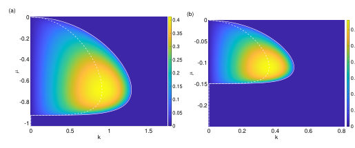
<figcaption class="paper-figure-caption"><b>Fig 1.</b> FIG. 1. Modulational instability gain, G = Im(Ω−), as a function of the perturbation wavenumber k and chemical po- tential µ for the lower constant-amplitude branch at fixed δg = 1: (a) gLHY = 0.4 and (b) gLHY = 1.</figcaption>
</figure>
<figure class="paper-figure-card">

<figcaption class="paper-figure-caption"><b>Fig 2.</b> FIG. 2. Stable evolution of the kink (a) and antikink (b) solutions at µ = −0.72 under small random perturbations. The perturbation amplitude is ǫ = 10−3, and the remaining parameters are δg = 1 and gLHY = 0.4.</figcaption>
</figure>
<figure class="paper-figure-card">
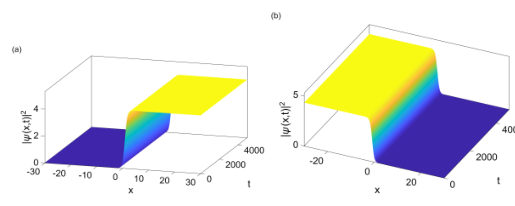
<figcaption class="paper-figure-caption"><b>Fig 3.</b> Figure 2 shows the typical time evolution of the kink and antikink solutions in panels (a) and (b), respectively, after a small random perturbation is added to the ini- tial stationary profiles. To assess dynamical stability, we define the initial conditions as follows: ψ(x, 0) = ψ0(x) [1 + ǫR(x)] , here, ψ0(x) denotes the stationary kink or antikink profile, R(x) is a random function uni- formly distributed over [−1, 1], and ǫ = 10−3 represents the perturbation amplitude. The simulations indicate</figcaption>
</figure>
<figure class="paper-figure-card">
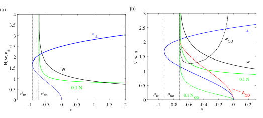
<figcaption class="paper-figure-caption"><b>Fig 4.</b> FIG. 3. (a) Parameters of 1D symmetric holes versus the chemical potential µ. The left and right vertical dotted lines mark µcr [Eq. (7)] and µco [Eq. (32)], respectively. The green curve shows the redefined norm N(µ), scaled by 0.1 for clarity, while the black curve gives the notch width w(µ). The blue curves represent the constant-background branches a±(µ), with the thick upper and thin lower segments correspond- ing to a+(µ) and a−(µ), respectively. (b) Zoom of panel (a), including the norm NQD(µ), amplitude AQD(µ), and width wQD(µ) of symmetric self-bound 1D quantum droplets, ob- tained from a super-Gaussian function-based variational ap- proach. Other parameters are δg = 1 and gLHY =...</figcaption>
</figure>
<figure class="paper-figure-card">
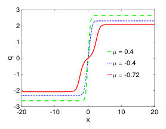
<figcaption class="paper-figure-caption"><b>Fig 5.</b> FIG. 4. Representative hole profiles for different values of the chemical potential µ. From top to bottom, the curves correspond to µ = 0.4 (green dashed line), µ = −0.4 (blue dotted line), and µ = −0.72 (red solid line). Other parameters are δg = 1 and gLHY = 0.4.</figcaption>
</figure>
</div>

<p><strong>Summary.</strong> This paper theoretically explores nonlinear structures like quantum droplets and bubbles in Bose mixtures governed by an extended Gross-Pitaevskii equation. By analyzing the stability of background states and constructing solutions from nonlinear fronts, the authors map out a unified picture connecting these self-bound states. The findings are crucial for understanding the complex dynamics and stability of interacting quantum gases beyond mean-field theory.</p>
<p><strong>Why it may be interesting.</strong> This work provides a comprehensive theoretical framework connecting mean-field interactions, quantum fluctuations (LHY), and topological defects (kinks/holes) in Bose-Einstein condensates, which is central to modern AMO physics.</p>
<details>
<summary>Detailed structure</summary>
<p><strong>Main problem.</strong> The study investigates the existence and properties of nonlinear structures, such as quantum droplets, bubbles, and hole states, within a Bose mixture.</p>
<p><strong>Main result.</strong> The paper establishes a unified front-based picture connecting these localized states, showing that collisions exhibit phase-dependent dynamics and that deep bubbles possess finite-time robustness.</p>
<p><strong>Method.</strong> The research combines analytical methods, including Bogoliubov-de Gennes spectrum analysis and grand-potential calculations, with real-time numerical simulations of the time-dependent Gross-Pitaevskii equation.</p>
<p><strong>Model / system.</strong> The system is an elongated Bose mixture modeled by an extended Gross-Pitaevskii equation incorporating both attractive cubic mean-field interactions and repulsive quartic Lee-Huang-Yang contributions.</p>
<p><strong>Key observables.</strong> Modulational stability gain, density deficit/bubble depth, collision dynamics (merging, particle transfer), and the background amplitude $a$.</p>
<p><strong>Important parameters / regimes.</strong> The chemical potential ($\mu$), the relative phase between components, and the separation distance between nonlinear fronts.</p>
<p><strong>Assumptions / limitations.</strong> The analysis relies on classifying constant-amplitude backgrounds and assumes the quasi-one-dimensional regime for the effective LHY term.</p>
<p><strong>Figures summary.</strong> Figures illustrate the modulational instability gain for the lower background branch, the time evolution of perturbed asymmetric holes showing stability near the coexistence limit, and the phase-dependent merging dynamics during droplet collisions.</p>
<p><strong>Paper structure.</strong> The paper systematically analyzes the stable background states, determines their stability via the Bogoliubov-de Gennes spectrum, constructs kink/antikink solutions, and then applies these fronts to model holes, bubbles, and droplet collisions in both scalar and two-component systems.</p>
</details>
<details>
<summary>Abstract</summary>
<p>We study nonlinear holes, bubbles, kink fronts, and quantum-droplet-like states in an elongated Bose mixture governed by an extended Gross-Pitaevskii equation with attractive cubic mean-field interactions and repulsive quartic Lee-Huang-Yang contribution. We classify the constant-amplitude backgrounds: the Bogoliubov-de Gennes spectrum shows that the upper branch is modulationally stable, whereas the lower branch is unstable to long-wavelength perturbations. Grand-potential and pressure determine the vacuum-finite-density coexistence point and the unique background supporting stationary kink and antikink fronts. Symmetric holes on the stable background have a density deficit and integral width that diverge near coexistence as the hole separates into two nonlinear fronts. A multiplicative kink-antikink construction connects bell-shaped states to broad flat-top droplets and approaches the stationary quantum-droplet family as the front separation increases. An antikink-kink sum with equal signs generates bubble-like density depletions without a phase jump, whereas their difference produces dark-hole-like profiles with a $π$ phase difference between the asymptotic backgrounds. Bubble depth increases with front separation, distinguishing gray-like and dark-like profiles. Real-time simulations show that deep bubbles persist under weak random perturbations, demonstrating finite-time robustness without establishing spectral stability. In the asymmetric two-component model, localized relative-density modes can induce spinor-driven breakup on a modulationally stable background, while robust holes persist near the kink limit. Collisions of kink-antikink droplet-like states display phase-dependent merging, asymmetric particle transfer, and effective reflection. These results connect nonlinear fronts with bubbles, phase-jump holes, and self-bound droplets in beyond-mean-field Bose mixtures.</p>
</details>
<p><sub><a href="#top">↑ back to top</a></sub></p>

<p><a id="paper-2609.30596"></a></p>
<h3 id="emergent-wigner-magnon-crystals-in-a-fully-frustrated-heisenberg-four-leg-tube"><a href="http://arxiv.org/abs/2609.30596v1">Emergent Wigner magnon crystals in a fully frustrated Heisenberg four-leg tube</a></h3>
<p><strong>Authors:</strong> Azam Zoshki, Hamid Arian Zad, Jozef Strecka<br>
<strong>Type:</strong> theory · <strong>Category:</strong> statistical mechanics · <strong>PDF:</strong> <a href="https://arxiv.org/pdf/2609.30596v1">https://arxiv.org/pdf/2609.30596v1</a><br>
<strong>Analysis basis:</strong> full PDF text, analyzed in chunks
<strong>Topic relevance:</strong> <code>analog quantum simulation</code> <strong>3/5</strong></p>
<div class="figure-strip-hint">↔ Scroll figures horizontally</div>
<div class="paper-figures-scroll">
<figure class="paper-figure-card">
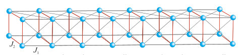
<figcaption class="paper-figure-caption"><b>Fig 1.</b> FIG. 1. Schematic illustration of a fully frustrated four-leg tube. The blue balls represent lattice position of spin-1/2 particles, thick red lines indicate intra-plaquette interaction J2, and thin black lines represent inter-plaquette interaction J1. For better clarity, the diagonal inter-plaquette couplings J1 are shown only for top and front square plaquettes.</figcaption>
</figure>
<figure class="paper-figure-card">
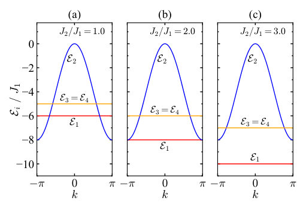
<figcaption class="paper-figure-caption"><b>Fig 2.</b> FIG. 2. The one-magnon energy bands of the fully frustrated spin-1/2 Heisenberg four-leg tube given by Eq. (4) at zero magnetic field for three selected values of the interaction ratio: (a) J2/J1 = 1.0; (b) J2/J1 = 2.0; (c) J2/J1 = 3.0.</figcaption>
</figure>
<figure class="paper-figure-card">
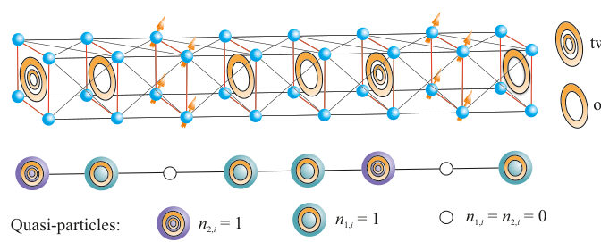
<figcaption class="paper-figure-caption"><b>Fig 3.</b> FIG. 3. Schematic representation of a selected eigenstate of the fully frustrated spin-1/2 Heisenberg four-leg tube (a) and its equivalent representation within the effective two-component lattice-gas model (b). The single and double orange circles denote the bound one- and two-magnon states of a square plaquette, respectively, which are represented in the effective description by the two kinds of hard-core monomer quasi-particles illustrated by green and violet balls. Fully polarized square plaquettes correspond to empty (unoccupied) lattice sites.</figcaption>
</figure>
<figure class="paper-figure-card">
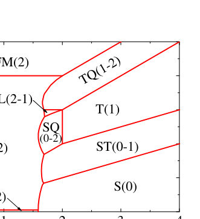
<figcaption class="paper-figure-caption"><b>Fig 4.</b> FIG. 4. Ground-state phase diagram of the fully frustrated spin-1/2 Heisenberg four-leg tube in the J2/J1 −h/J1 plane obtained from DMRG calculations for a finite-size system with Nu = 120 unit cells (N = 480 spins). The individual ground states are denoted as follows: S(0) - singlet phase, ST(0-1) - singlet-triplet phase, T(1) - triplet phase, TQ(1-2) - triplet-quintuplet phase, SQ(0-2) - singlet-quintuplet phase, FM(2) - ferromagnetic phase, H(2) - Haldane phase, TL(2) and TL(2-1) - Tomonaga-Luttinger quantum spin liquids. The numbers in round brackets specify the composite quan- tum spin numbers Ti of the square plaquettes.</figcaption>
</figure>
<figure class="paper-figure-card">
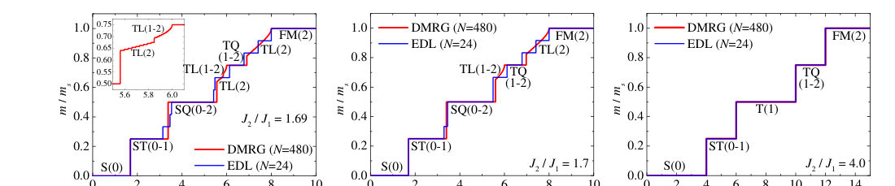
<figcaption class="paper-figure-caption"><b>Fig 5.</b> FIG. 5. Zero-temperature magnetization curves of the fully frustrated spin-1/2 Heisenberg four-leg tube calculated by EDL (blue lines) and DMRG (red lines) methods for six selected values of the interaction ratio: (a) J2/J1 = 1.0, (b) J2/J1 = 1.6, (c) J2/J1 = 1.65, (d) J2/J1 = 1.67, (e) J2/J1 = 1.7, and (f) J2/J1 = 4.0. The magnetization is normalized with respect to its saturation value m/ms, the EDL and DMRG results are presented for N = 24 and N = 480 spins, respectively. The inset in panel (a) illustrates finite-size effects in the low-field DMRG magnetization curves for the systems involving N = 360 and N = 480 spins, while the inset in panel (d) provides an enlarged view of the...</figcaption>
</figure>
</div>

<p><strong>Summary.</strong> This work analyzes a frustrated quantum spin chain, revealing the emergence of Wigner magnon crystals in the highly frustrated regime. By modeling the system using an effective lattice-gas approach, the authors demonstrate that the thermodynamic performance of a quantum Stirling engine is strongly dictated by these crystal phases, achieving peak efficiency within their stable regions.</p>
<p><strong>Why it may be interesting.</strong> The direct connection drawn between the sequence of field-induced quantum phases (Wigner crystals) and the maximum efficiency of a quantum heat engine provides a concrete, measurable signature of quantum phase transitions in a many-body system.</p>
<details>
<summary>Detailed structure</summary>
<p><strong>Main problem.</strong> The study investigates the ground state, thermodynamics, and heat engine performance of a fully frustrated spin-1/2 Heisenberg four-leg tube.</p>
<p><strong>Main result.</strong> The system exhibits Wigner magnon crystals in the highly frustrated regime, and the efficiency of a quantum Stirling engine is maximized deep within the stability regions of these crystal phases, not at the phase boundaries.</p>
<p><strong>Method.</strong> The research employs a combination of exact diagonalization, density matrix renormalization group (DMRG), and mapping the low-energy physics onto an effective interacting lattice-gas model.</p>
<p><strong>Model / system.</strong> The system is a fully frustrated spin-1/2 Heisenberg four-leg tube described by a Hamiltonian involving inter-plaquette ($J_1$) and intra-plaquette ($J_2$) couplings, subjected to a magnetic field ($h$).</p>
<p><strong>Key observables.</strong> Ground state phase diagram, magnetization curves, low-temperature thermodynamics (entropy, specific heat), work output, and efficiency ($\eta$) of a quantum Stirling heat engine.</p>
<p><strong>Important parameters / regimes.</strong> Frustration ratio ($J_2/J_1$), magnetic field strength ($h$), and temperature ratios ($T_H/J_1, T_L/J_1$).</p>
<p><strong>Assumptions / limitations.</strong> The low-energy physics is accurately captured by an effective interacting lattice-gas model of two monomer quasi-particle species, which neglects higher-energy excitations.</p>
<p><strong>Figures summary.</strong> Figure 1 schematically illustrates the fully frustrated four-leg tube structure, detailing the $J_2$ and $J_1$ couplings.</p>
<p><strong>Paper structure.</strong> The paper systematically analyzes the system's behavior across different frustration regimes, first establishing the magnon spectrum and Wigner crystal states using localized-magnon theory, then deriving an effective lattice-gas model, and finally applying this framework to calculate the thermodynamic properties and heat engine performance.</p>
</details>
<details>
<summary>Abstract</summary>
<p>The ground state, magnetization curves, low-temperature thermodynamics, and heat-engine performance of the fully frustrated spin-$1/2$ Heisenberg four-leg tube with antiferromagnetic inter- and intra-plaquette coupling constants J1 and J2 are examined using exact diagonalization, density matrix renormalization group, and localized-magnon theory. In the unfrustrated to weakly frustrated regime J2/J1 &lt;&lt; 2, the system exhibits a continuous field-driven quantum phase transition between the gapped Haldane phase and a gapless Tomonaga-Luttinger quantum spin liquid. In the highly frustrated regime J2/J1 &gt; 2, the system contrarily displays discontinuous field-driven quantum phase transitions between the Wigner magnon crystals, which are manifested in zero-temperature magnetization curves as intermediate plateaus at zero, one-quarter, one-half, and three-quarters of the saturation magnetization. The low-temperature magnetic and thermodynamic properties in this regime are accurately captured by an effective interacting lattice-gas model of two monomer quasi-particle species constructed from localized one- and two-magnon states. Finally, we explore a quantum Stirling heat engine using the fully frustrated four-leg tube as the working medium. The work output and efficiency are strongly suppressed near discontinuous field-induced transitions and reach pronounced local maxima well inside the stability regions of the Wigner magnon crystals.</p>
</details>
<p><sub><a href="#top">↑ back to top</a></sub></p>

<p><a id="paper-2609.31605"></a></p>
<h3 id="measurement-based-uncomputation-from-an-error-correction-perspective"><a href="http://arxiv.org/abs/2609.31605v1">Measurement-Based Uncomputation from an Error Correction Perspective</a></h3>
<p><strong>Authors:</strong> Minjun Jeon, Po-Wei Huang, Zhenyu Cai<br>
<strong>Type:</strong> theory · <strong>Category:</strong> quantum information and computing · <strong>PDF:</strong> <a href="https://arxiv.org/pdf/2609.31605v1">https://arxiv.org/pdf/2609.31605v1</a><br>
<strong>Analysis basis:</strong> full PDF text, analyzed in chunks
<strong>Topic relevance:</strong> <code>quantum measurements</code> <strong>3/5</strong></p>
<div class="figure-strip-hint">↔ Scroll figures horizontally</div>
<div class="paper-figures-scroll">
<figure class="paper-figure-card">
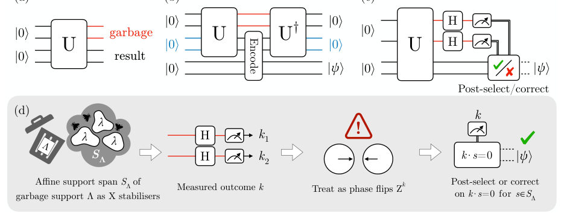
<figcaption class="paper-figure-caption"><b>Fig 1.</b> FIG. 1. Conceptual overview of measurement-based uncomputation (MBU) as quantum error correction (QEC). (a) Standard reversible computation generates a useful result together with a garbage register. (b) Conventional uncomputation restores the garbage register by coherently applying the inverse circuit U †, requiring the garbage qubits to remain coherent until the end of the computation. Before the uncomputation, the result (usually) is copied or encoded into a separate register. (c) In MBU, the garbage register is measured in the X basis instead of being coherently uncomputed. The measurement outcome is accepted only if it satisfies the required acceptance condition (pure post-selection in...</figcaption>
</figure>
<figure class="paper-figure-card">
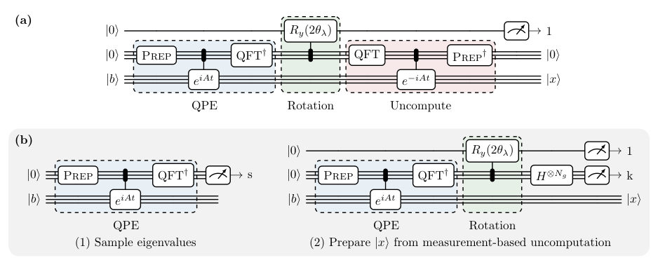
<figcaption class="paper-figure-caption"><b>Fig 2.</b> FIG. 2. Comparison between coherent and post-selected uncomputation in HHL. (a) Standard coherent HHL implementation. After QPE computes the eigenvalue estimate into the phase register and the controlled rotation implements the factor proportional to 1/λ, the eigenvalue register is disentangled by applying inverse QPE. This requires the phase-estimation workspace to remain coherent until the end of the inverse block. (b) Post-selected measurement-based replacement. A preliminary sampling stage estimates the populated eigenvalue support Λ and hence the affine support span SΛ. In the state-preparation run, the controlled rotation is followed by an X-basis measurement of the eigenvalue...</figcaption>
</figure>
<figure class="paper-figure-card">
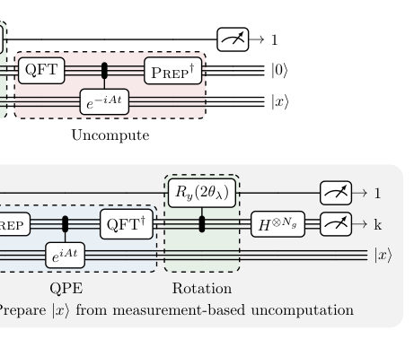
<figcaption class="paper-figure-caption"><b>Fig 3.</b> Fig. 2 illustrates the replacement of the coherent inverse- QPE block in standard HHL with post-selected MBU, i.e., an X-basis measurement of the eigenvalue register fol- lowed by a post-selection on the syndrome-zero subspace, i.e., on the outcomes k ∈S⊥ Λ .</figcaption>
</figure>
<figure class="paper-figure-card">
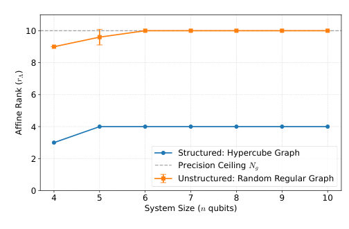
<figcaption class="paper-figure-caption"><b>Fig 4.</b> FIG. 3. Numerical validation of MBU for structured graph Laplacians. Affine rank rΛ as a function of system size n for a smooth physical signal (exponential spatial decay). For the structured hypercube graph, the affine rank remains func- tionally decoupled from the exponentially growing system volume over the simulated range. In contrast, eigenvalues of an unstructured random regular graph (RRG) lack algebraic correlation, causing the discretised labels to behave as inde- pendent bitstrings and rΛ to rapidly saturate the precision ceiling Ng = 10. For the random regular graph, the affine rank is averaged over 10 independent graph instances with error bars denoting one standard deviation....</figcaption>
</figure>
<figure class="paper-figure-card">
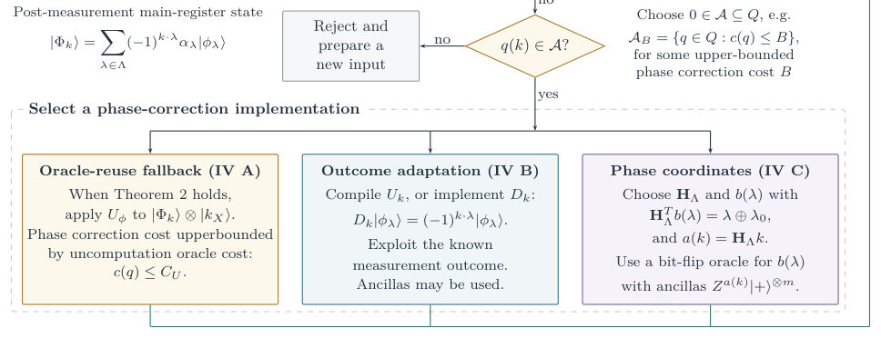
<figcaption class="paper-figure-caption"><b>Fig 5.</b> FIG. 4. Phase-corrected MBU. X-basis measurement of G yields outcome k and syndrome q(k). The induced phase can be corrected at the implementation cost c(q). Zero syndromes require no correction; accepted nonzero syndromes use oracle reuse under Theorem 2, outcome-adapted compilation, or optimised phase coordinates. Other outcomes are rejected. Choosing the accepted syndrome set A interpolates between pure post-selection, partial correction and deterministic MBU. All accepted outputs recover the target state up to a global phase.</figcaption>
</figure>
</div>

<p><strong>Summary.</strong> This paper proposes Measurement-Based Uncomputation (MBU) as an efficient alternative to complex inverse quantum circuits. By interpreting the measurement process through a Quantum Error Correction lens, the authors show that post-selection on zero-syndrome outcomes yields the desired uncomputation state. This approach significantly reduces overhead by linking success probability to the low-dimensional affine rank of the system's support.</p>
<p><strong>Why it may be interesting.</strong> While focused on computation, the rigorous mathematical framework connecting measurement outcomes to error syndromes and the use of algebraic rank to bound resource requirements is highly relevant to understanding noise and error mitigation in any physical quantum system.</p>
<details>
<summary>Detailed structure</summary>
<p><strong>Main problem.</strong> Developing an efficient method for Measurement-Based Uncomputation (MBU) to replace the costly coherent inverse circuits required in fault-tolerant quantum computation.</p>
<p><strong>Main result.</strong> Post-selected MBU achieves the necessary uncomputation by accepting only zero-syndrome measurement outcomes, with a success probability determined by the low-dimensional affine rank of the garbage support.</p>
<p><strong>Method.</strong> The authors recast MBU into a Quantum Error Correction (QEC) framework, analyzing measurement outcomes as syndrome measurements that induce relative phases.</p>
<p><strong>Model / system.</strong> The model involves a quantum computation with a main register and a garbage register ($G$). The process is analyzed by measuring $G$ in the X basis, relating the outcome to error syndromes.</p>
<p><strong>Key observables.</strong> Success probability ($P_{	ext{succ}}$), relative phases induced by measurement outcomes, and the affine rank ($r_\Lambda$) of the populated garbage support.</p>
<p><strong>Important parameters / regimes.</strong> The affine rank $r_\Lambda$ dictates the success probability ($P_{	ext{succ}} \propto 2^{-r_\Lambda}$), which is much smaller than the number of garbage qubits.</p>
<p><strong>Assumptions / limitations.</strong> The analysis relies on post-selecting on outcomes that yield zero relative phase, and later extends to bounding deviations from the ideal orthogonal case using coherence measures.</p>
<p><strong>Figures summary.</strong> Figure 1 conceptually maps the process from standard computation to MBU and its QEC interpretation. Other figures detail the comparison between standard and MBU implementations in algorithms like HHL.</p>
<p><strong>Paper structure.</strong> The paper builds from the conceptual problem of uncomputation to the algebraic framework of MBU via QEC, deriving the success probability based on the affine rank, and finally detailing structural conditions for deterministic correction.</p>
</details>
<details>
<summary>Abstract</summary>
<p>Coherent uncomputation can be as costly as the computation itself, creating substantial spacetime overheads that can be prohibitive on early fault-tolerant quantum computers. We develop an algebraic framework for measurement-based uncomputation (MBU) through a quantum error-correction picture: measurements of the garbage register induce relative phases analogous to errors causing non-trivial syndromes. Accepting only zero-syndrome outcomes achieves post-selected MBU, removing the need for an uncomputation oracle at the cost of a probabilistic success rate determined by the affine rank of the populated garbage support. This rank can be much smaller than the number of garbage qubits, as illustrated through an example of the HHL algorithm. We then derive a structural condition under which the original uncomputation oracle can be reused to correct the phase for all measurement outcomes. No correction is required for the zero syndrome, while corrections for non-zero syndromes can be further adapted to individual measurement outcomes for simpler circuits, as illustrated by existing modular-arithmetic, QROM, and QRAM MBU constructions. Phase-correction circuits can be further simplified by co-optimising their implementation with the representation of the measurement-induced phases. Selecting which syndrome classes to correct interpolates between post-selected, partially corrected, and deterministic MBU, enabling trade-offs among correction cost, workspace, and repetitions.</p>
</details>
<p><sub><a href="#top">↑ back to top</a></sub></p>

<p><a id="paper-2609.30372"></a></p>
<h3 id="non-vanishing-density-of-states-in-disordered-weyl-semimetals"><a href="http://arxiv.org/abs/2609.30372v1">Non-vanishing Density of States in Disordered Weyl Semimetals</a></h3>
<p><strong>Authors:</strong> Justin H. Wilson<br>
<strong>Type:</strong> theory · <strong>Category:</strong> disordered systems and neural networks · <strong>PDF:</strong> <a href="https://arxiv.org/pdf/2609.30372v1">https://arxiv.org/pdf/2609.30372v1</a><br>
<strong>Analysis basis:</strong> full PDF text, analyzed in chunks
<strong>Topic relevance:</strong> <code>Keldysh / 2PI / non-Gaussian methods</code> <strong>3/5</strong></p>
<div class="figure-strip-hint">↔ Scroll figures horizontally</div>
<div class="paper-figures-scroll">
<figure class="paper-figure-card">
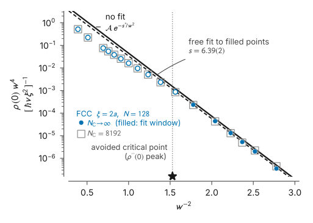
<figcaption class="paper-figure-caption"><b>Fig 1.</b> FIG. 1. Zero-energy density of states. 𝜌(0) 𝑤4 where 𝑤= 𝑊𝜉∕ℏ𝑣and 𝜌is in units of 1∕ℏ𝑣𝜉2. Data points from the single- cone calculations in Ref. [5] (𝑘-space fcc discretization, 𝜉= 2𝑎, 𝑁= 128): blue circles are extrapolated in Chebyshev order, 𝑁C →∞; grey squares are the largest computed order, 𝑁C = 8192; error bars are smaller than the markers. Equation (1) is the straight solid line with slope −𝑠∗with no fitted parameters. The dashed line is a fit over the lowest six data points (filled): the exponent agrees to 1–2% and the amplitude is 27% below the analytic one-loop value (×0.73). Open circles are at or after the avoided quantum critical point (star and dotted vertical line found via...</figcaption>
</figure>
<figure class="paper-figure-card">
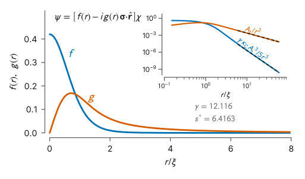
<figcaption class="paper-figure-caption"><b>Fig 2.</b> FIG. 2. The instanton. Radial profile of the 𝑗= 1 2 hedgehog solution of Eq. (10) for the Gaussian correlator, with self-consistent coupling 𝛾= 12.116 and action 𝑠∗= 6.4163. Inset: the same plot on logarithmic axes taken out to 𝑟= 60 𝜉to show the asymptotic tails 𝑔→𝐴𝑡∕𝑟2 and 𝑓→𝛾𝜅𝐶𝐴3 𝑡∕5𝑟5 (dashed).</figcaption>
</figure>
<figure class="paper-figure-card">
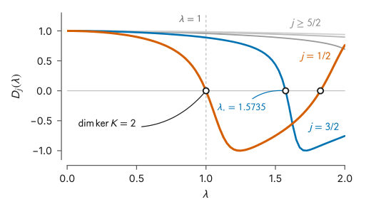
<figcaption class="paper-figure-caption"><b>Fig 3.</b> FIG. 3. Normalized radial matching determinant scan of the fermion kernel. 𝐷𝑗(𝜆) for each channel 𝑗as the coupling is scaled by 𝜆; roots (circles) mark kernel elements. At the physical coupling 𝜆= 1 only the 𝑗= 1</figcaption>
</figure>
<figure class="paper-figure-card">
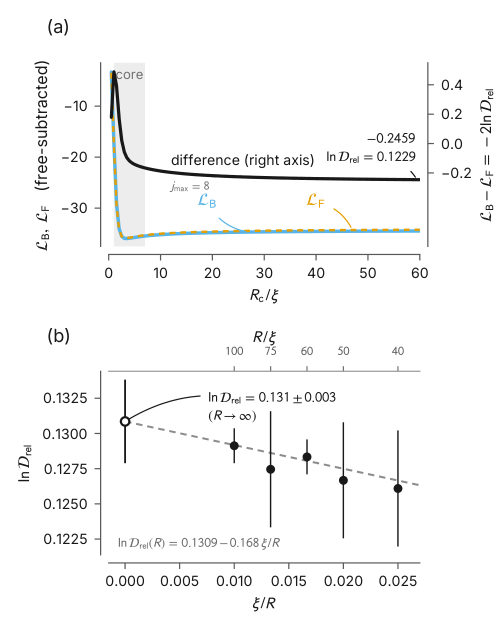
<figcaption class="paper-figure-caption"><b>Fig 4.</b> FIG. 4. The fluctuation determinant. (a) Radial attribution of the fluctuation weight, Eq. (36): each eigenvalue’s logarithm is weighted in proportion to its eigenvector’s norm in 𝑟&lt; 𝑅𝑐, so the curves show the free-subtracted partial log determinants ℒB, ℒF accumulated out to radius 𝑅𝑐(𝑗max = 8, 𝑅= 60 𝜉): each separately runs to ≈−34, and they cancel to the residual −0.2459 = −2 ln 𝒟rel at this truncation (right axis), exactly the supersymmetric cancel- lation of determinants which enables Eq. (6). The shaded band marks the instanton core, 1 ≤𝑟∕𝜉≤7, where the difference accu- mulates; beyond 𝑅𝑐= 20 𝜉only −0.028 remains. (b) ln 𝒟rel after 𝑗max extrapolation versus 𝜉∕𝑅for 𝑅∕𝜉= 40–100 (top...</figcaption>
</figure>
</div>

<p><strong>Summary.</strong> This theoretical work resolves a major conflict in the literature concerning the density of states in disordered Weyl semimetals. By performing a comprehensive saddle-point calculation including quantum fluctuations, the authors prove that the zero-energy density of states remains finite regardless of the disorder strength. This provides a crucial theoretical benchmark for understanding topological materials in realistic, imperfect environments.</p>
<p><strong>Why it may be interesting.</strong> The rigorous application of advanced field theory (supersymmetry, instanton calculus) to determine a fundamental transport property ($
ho(0)$) in a topological material under disorder is highly relevant for understanding robustness in quantum devices.</p>
<details>
<summary>Detailed structure</summary>
<p><strong>Main problem.</strong> The paper resolves a long-standing theoretical disagreement regarding whether the zero-energy density of states ($
ho(0)$) in a 3D Weyl semimetal vanishes when subjected to weak short-range disorder.</p>
<p><strong>Main result.</strong> The authors establish that $
ho(0)$ is finite for any disorder strength, providing an analytical expression that matches exact numerical calculations over several orders of magnitude.</p>
<p><strong>Method.</strong> The calculation employs a full saddle-point approximation within a supersymmetric field-theoretic framework, combining instanton calculations with the computation of one-loop fluctuations via a convergent Fredholm determinant.</p>
<p><strong>Model / system.</strong> The system is a three-dimensional Weyl semimetal described by a Hamiltonian subjected to weak, short-range, Gaussian-correlated disorder. The analysis utilizes advanced techniques from supersymmetric quantum field theory and replica methods.</p>
<p><strong>Key observables.</strong> Zero-energy density of states, $
ho(0)$, and the associated non-vanishing prefactor $\mathcal{A}$ and exponent $s^*$.</p>
<p><strong>Important parameters / regimes.</strong> Disorder strength $w$, and the calculated constants $s^* = 6.4163(2)$ and $\mathcal{A} = 27.47(8)$.</p>
<p><strong>Assumptions / limitations.</strong> The analysis relies on the supersymmetric formulation of disorder and the validity of the saddle-point approximation for the functional integral.</p>
<p><strong>Figures summary.</strong> Figure 1 compares the calculated $
ho(0)$ with exact numerics, showing agreement over four orders of magnitude. Other figures illustrate the radial profiles of the hedgehog solution and the convergence of determinant calculation methods.</p>
<p><strong>Paper structure.</strong> The paper progresses by first setting up the problem using supersymmetric functional integrals, solving the nonlinear Weyl equation for the instanton solution, and then calculating the fluctuations by determining the reduced superdeterminant as a Fredholm determinant. The final result is the explicit, finite expression for $
ho(0)$.</p>
</details>
<details>
<summary>Abstract</summary>
<p>There is disagreement in the literature concerning whether the nodal point of a three-dimensional Weyl semimetal survives weak short-range disorder: instanton calculations including fluctuations claim that the zero-energy density of states $ρ(0)$ vanishes, while exact numerics find a systematically finite number. We settle this disagreement with a full saddle-point calculation, including both instanton and fluctuations. Within the supersymmetric formulation for disorder, the instanton obeys a nonlinear Weyl equation whose solution is an exact $j=1/2$ hedgehog whose full functional form we numerically compute. We then compute the fluctuations about this saddle point, carefully identifying all zero modes, and computing the reduced superdeterminant as a convergent Fredholm determinant. No fermionic zero mode beyond a Kramers doublet exists, and at finite disorder $w$, the fluctuations become a finite one-loop prefactor, $ρ(0)=\mathcal{A} w^{-4} \exp(-s^*/w^2)(1+O(w^2))$, in normalized units with $s^* = 6.4163(2)$ and $\mathcal{A} = 27.47(8)$ for Gaussian-correlated disorder. This expression matches exact numerics on a single Weyl cone over four orders of magnitude with no fitted parameters (the amplitude is $\times 0.76$ the one-loop value), establishing that the density of states is finite for any disorder strength.</p>
</details>
<p><sub><a href="#top">↑ back to top</a></sub></p>

<p><a id="paper-2609.31075"></a></p>
<h3 id="on-the-applicability-of-kolmogorovs-theory-of-probability-to-the-description-of-quantum-phenomena-part-ii-bell-inequalities"><a href="http://arxiv.org/abs/2609.31075v1">On the applicability of Kolmogorov's theory of probability to the description of quantum phenomena. Part II: Bell inequalities</a></h3>
<p><strong>Authors:</strong> Maik Reddiger<br>
<strong>Type:</strong> theory · <strong>Category:</strong> other · <strong>PDF:</strong> <a href="https://arxiv.org/pdf/2609.31075v1">https://arxiv.org/pdf/2609.31075v1</a><br>
<strong>Analysis basis:</strong> full PDF text, analyzed in chunks
<strong>Topic relevance:</strong> <code>quantum measurements</code> <strong>3/5</strong></p>
<div class="figure-strip-hint">↔ Scroll figures horizontally</div>
<div class="paper-figures-scroll">
<figure class="paper-figure-card">
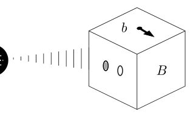
<figcaption class="paper-figure-caption"><b>Fig 1.</b> Figure 1: Sketch of the measurement setup for a general Bell experiment. In this particular trial, detector A with setting a records the value +1. Detector B with setting b records the value −1. Bell inequalities are tested by recording multiple outcomes for various settings.</figcaption>
</figure>
<figure class="paper-figure-card">
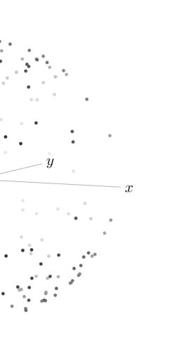
<figcaption class="paper-figure-caption"><b>Fig 2.</b> Figure 2: Plot of numerical sample data for the values of ⃗sA in the file BCHSH break.dat. Data points with larger y-values are depicted in a lighter color.</figcaption>
</figure>
</div>

<p><strong>Summary.</strong> This paper re-examines Bell inequalities by analyzing them through the lens of Kolmogorov's probability theory, introducing the concept of contextuality. It demonstrates that even 'classical' models can be contextual, and crucially, that contextual models can violate Bell inequalities even under strong locality assumptions. This suggests that the physical conclusions drawn from Bell tests might stem from a conceptual misunderstanding regarding the nature of probability itself.</p>
<p><strong>Why it may be interesting.</strong> It challenges the fundamental assumptions underlying the interpretation of quantum nonlocality, which is crucial for understanding measurement processes in quantum information and open quantum systems.</p>
<details>
<summary>Detailed structure</summary>
<p><strong>Main problem.</strong> The paper analyzes the applicability of Kolmogorov's theory of probability to quantum phenomena, specifically focusing on the implications of violating Bell inequalities.</p>
<p><strong>Main result.</strong> Contextuality reveals a conceptual misunderstanding in the physical conclusions drawn from Bell inequality violations, suggesting that 'nonlocality' does not necessarily follow from empirical violations while respecting locality.</p>
<p><strong>Method.</strong> The analysis involves a comprehensive mathematical study of Bell experiments, focusing on the BCHSH inequality and introducing the notion of contextuality into the probabilistic framework.</p>
<p><strong>Model / system.</strong> The study uses the framework of Bell experiments, analyzing correlations between detector outcomes (A and B) for various settings (a, b), and comparing classical probabilistic models against quantum predictions.</p>
<p><strong>Key observables.</strong> Expectation values, such as $\langle A(a), B(b) 
angle$, and the violation magnitude of the BCHSH inequality.</p>
<p><strong>Important parameters / regimes.</strong> The settings of the detectors ($a, b$) and the underlying assumptions of locality and noncontextuality.</p>
<p><strong>Assumptions / limitations.</strong> The work critically examines the assumption of noncontextuality, which is a core assumption in the standard derivation of Bell inequalities.</p>
<p><strong>Figures summary.</strong> Not specified.</p>
<p><strong>Paper structure.</strong> The work is presented as Part II of a series, building upon foundational discussions of quantum mechanics and probability theory, and focusing specifically on the mathematical and physical interpretation of Bell inequalities.</p>
</details>
<details>
<summary>Abstract</summary>
<p>Among the various "no-go theorems" in the foundations of quantum mechanics, Bell inequalities are among the few, which do not implicitly rely on the mathematical structure of quantum mechanics. Instead, Bell inequalities are commonly understood to rest on Kolmogorov's theory of probability and a "locality" assumption. Physical evidence supporting their violation is hence taken as evidence against at least one of these two assumptions.   This work provides a comprehensive analysis of the physical debate on Bell inequalities from the point of view of Kolmogorov's theory of probability, focusing on the Bell-Clauser-Horn-Shimony-Holt inequality (BCHSH inequality). The central contribution is the motivation and mathematical study of the notion of contextuality in Bell experiments: in so-called contextual Bell models the detectors themselves behave randomly and the distribution of the random detector parameters depends on the chosen detector settings. It is shown how even "classical" Bell experiments motivate such a description. The need to account for contextuality was pointed out before by de la Peña, Cetto, Brody, Lochak, Bohm, Hiley and others. A broad class of contextual models is proven to satisfy the BCHSH inequality, thereby generalizing a previous result by Gill and Lambare. Nonetheless, even under strong locality requirements, contextual Bell models may violate the BCHSH inequality: based on work by Popescu and Rohrlich, we consider a "proof of concept" example exhibiting the maximum possible violation.   Contrary to the much debated "loopholes" in empirical tests of Bell inequalities, contextuality thus reveals a conceptual misunderstanding in the physical conclusions commonly drawn from Bell inequality violations.</p>
</details>
<p><sub><a href="#top">↑ back to top</a></sub></p>

<p><a id="paper-2609.30910"></a></p>
<h3 id="preparation-changes-the-cost-of-calibration-for-quantum-control"><a href="http://arxiv.org/abs/2609.30910v1">Preparation Changes the Cost of Calibration for Quantum Control</a></h3>
<p><strong>Authors:</strong> Xiu-Hao Deng<br>
<strong>Type:</strong> theory · <strong>Category:</strong> quantum information and computing · <strong>PDF:</strong> <a href="https://arxiv.org/pdf/2609.30910v1">https://arxiv.org/pdf/2609.30910v1</a><br>
<strong>Analysis basis:</strong> full PDF text, analyzed in chunks
<strong>Topic relevance:</strong> <code>quantum measurements</code> <strong>3/5</strong></p>
<div class="figure-strip-hint">↔ Scroll figures horizontally</div>
<div class="paper-figures-scroll">
<figure class="paper-figure-card">
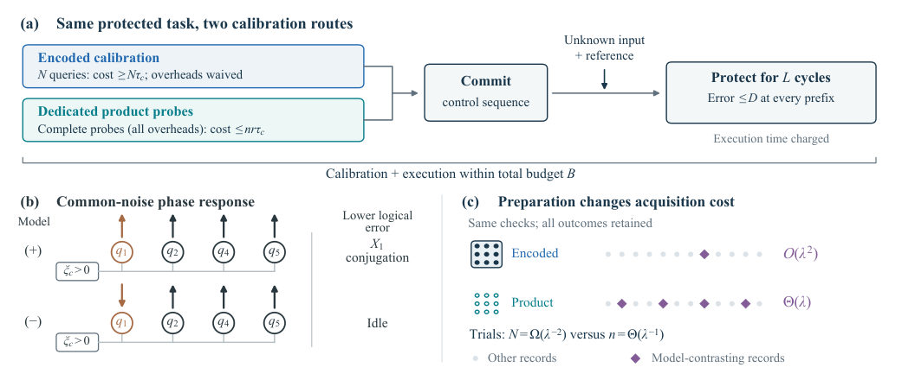
<figcaption class="paper-figure-caption"><b>Fig 1.</b> FIG. 1. Preparation changes the cost of learning a useful control. (a) The two branches are alternative calibration routes, completed before the unknown logical/reference input, that commit a control for the same protected idle. N and n count encoded queries and product probes; τc is one protected-cycle duration, and rτc upper-bounds a complete product probe. The budget charges calibration and execution; encoded overheads are waived in the lower bound. (b) Arrows show phase responses to a positive common fluctuation ξc; independent fluctuations are omitted. Only qubit 1 (copper) reverses between models. All arrows reverse when ξc changes sign. The right column gives the lower-error control...</figcaption>
</figure>
<figure class="paper-figure-card">
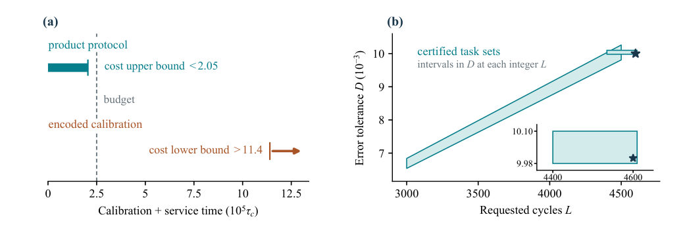
<figcaption class="paper-figure-caption"><b>Fig 2.</b> FIG. 2. Calibration preparation changes which tasks fit the budget. (a) At the task starred in (b), the teal capped segment is the product-protocol total-cost upper bound, the orange rightward arrow is the encoded-calibration necessary lower bound, and the gray dashed line is the budget: 2.05 &lt; 2.5 &lt; 11.4 in units of 105τc. Thus the product protocol is certified within budget while encoded calibration is excluded; the marks are bounds, not measured costs. (b) Teal shading marks sufficient certified task sets for which the product protocol meets the target while encoded calibration is excluded at the same budget and deadline. The sloped band and rectangle give intervals of allowed error...</figcaption>
</figure>
</div>

<p><strong>Summary.</strong> This work analyzes the resource overhead required to calibrate quantum controls in error-corrected systems under noise. By comparing encoded calibration against product probing, the authors show that product probes offer a substantial reduction in required measurement samples. This improvement allows for the execution of protected quantum tasks within operational budgets that would otherwise be insufficient.</p>
<p><strong>Why it may be interesting.</strong> It provides a concrete, resource-aware comparison of quantum control techniques, which is highly relevant for designing fault-tolerant quantum computation protocols on near-term hardware.</p>
<details>
<summary>Detailed structure</summary>
<p><strong>Main problem.</strong> The paper compares the resource cost of learning necessary quantum control information using standard encoded calibration versus using dedicated product probes within a finite operational budget.</p>
<p><strong>Main result.</strong> Product probes significantly reduce the required sample complexity for learning control correlations, enabling protected quantum tasks under tighter budget constraints where encoded calibration fails.</p>
<p><strong>Method.</strong> The analysis uses information-theoretic bounds, comparing the sample complexity derived from KL divergence and analyzing the scaling of logical dephasing rates for both calibration methods.</p>
<p><strong>Model / system.</strong> The study models quantum error correction on a surface code subjected to Gaussian dephasing noise. The comparison is between two distinct calibration protocols: encoded calibration and product probing.</p>
<p><strong>Key observables.</strong> Logical phase-flip probabilities, sample complexity scaling (inverse-square vs. inverse-linear in phase variance), and the total operational cost.</p>
<p><strong>Important parameters / regimes.</strong> Phase variance ($\lambda$), total budget ($B$), and the depth/size of the task ($L$).</p>
<p><strong>Assumptions / limitations.</strong> The analysis assumes ideal pulses and fixed recovery operations, and the results are certified sufficient subsets rather than optimized boundaries.</p>
<p><strong>Figures summary.</strong> Figures compare the resource costs (Product vs. Encoded) against a fixed budget, showing the product protocol remains feasible while the encoded calibration requirement exceeds the budget.</p>
<p><strong>Paper structure.</strong> The paper progresses by establishing the theoretical cost bounds for both calibration methods, deriving the scaling laws for information gain, and finally demonstrating through quantitative comparisons that the product probe method provides a superior, budget-compliant alternative.</p>
</details>
<details>
<summary>Abstract</summary>
<p>Error-correction records can reveal noise yet supply the information needed for control too slowly. In a surface code under Gaussian dephasing, encoded calibration learns a correlation that reverses the preferred control mainly through rare events. A product probe exposes it more often through the same checks, reducing ideal-record sample complexity from inverse-square to inverse-linear in phase variance. Counting both calibration and execution costs, we show that this gain can repay probe overhead and enable protected tasks within budgets that exclude encoded calibration.</p>
</details>
<p><sub><a href="#top">↑ back to top</a></sub></p>

<p><a id="paper-2609.31372"></a></p>
<h3 id="quantum-algorithms-for-the-exponentiation-of-toeplitz-matrices-and-applications-in-partial-differential-equations"><a href="http://arxiv.org/abs/2609.31372v1">Quantum algorithms for the exponentiation of Toeplitz matrices and applications in partial differential equations</a></h3>
<p><strong>Authors:</strong> Xabier Gutiérrez, Nicola Mariella, Javier González-Conde, Sergiy Zhuk, Mikel Sanz<br>
<strong>Type:</strong> theory · <strong>Category:</strong> quantum information and computing · <strong>PDF:</strong> <a href="https://arxiv.org/pdf/2609.31372v1">https://arxiv.org/pdf/2609.31372v1</a><br>
<strong>Analysis basis:</strong> full PDF text, analyzed in chunks
<strong>Topic relevance:</strong> <code>analog quantum simulation</code> <strong>3/5</strong></p>
<div class="figure-strip-hint">↔ Scroll figures horizontally</div>
<div class="paper-figures-scroll">
<figure class="paper-figure-card">
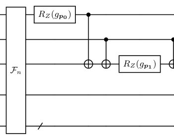
<figcaption class="paper-figure-caption"><b>Fig 1.</b> Figure 2: Structure of the circuit applying an approximation to the exp P</figcaption>
</figure>
</div>

<p><strong>Summary.</strong> This paper presents quantum algorithms to compute the exponential of banded Toeplitz matrices, which arise when discretizing PDEs. By relating these matrices to circulant generators diagonalized by the QFT, the authors circumvent the computational bottleneck associated with large matrix norms. This provides an efficient quantum simulation tool for physical systems like the heat equation.</p>
<p><strong>Why it may be interesting.</strong> This work provides a concrete, quantum-algorithmic pathway for simulating physical systems governed by differential operators (like the Laplacian) that are typically hard to encode quantumly due to large norms, making it highly relevant for quantum simulation.</p>
<details>
<summary>Detailed structure</summary>
<p><strong>Main problem.</strong> The paper develops quantum algorithms to efficiently approximate the matrix exponential of banded Toeplitz matrices, which are crucial for simulating time evolution governed by Partial Differential Equations (PDEs).</p>
<p><strong>Main result.</strong> The authors construct a quantum framework that bypasses the limitations of direct block encoding by exploiting the relationship between Toeplitz matrices and diagonal operators derived from the Quantum Fourier Transform (QFT).</p>
<p><strong>Method.</strong> The approach involves decomposing the Toeplitz matrix into a sum of circulant and skew-circulant generators, which are then exponentiated using specialized QFT-Trotter product formulas.</p>
<p><strong>Model / system.</strong> The underlying model involves discretizing PDEs (like the heat equation) into linear time evolution $\partial_t u = A u$, where the matrix $A$ is a banded Toeplitz matrix. The simulation is performed on qubits using block encoding techniques.</p>
<p><strong>Key observables.</strong> The primary observables are the matrix exponential $e^{At}$ and the error bounds associated with the approximation, such as $\eta(\delta, k)$ and the Trotter error.</p>
<p><strong>Important parameters / regimes.</strong> The key parameters include the bandwidth of the Toeplitz matrix, the number of qubits ($n$), and the frequency cutoff ($\delta$) used in the approximation.</p>
<p><strong>Assumptions / limitations.</strong> The method relies on approximating the diagonal eigenvalue matrix of circulant generators using truncated Pauli-string decompositions and assumes that the error introduced by this approximation remains controllable.</p>
<p><strong>Figures summary.</strong> The notes mention Figure 1 illustrating the circuit implementation of the unitary $C_k^n$ using the QFT, and various appendices detail mathematical identities and error bounds.</p>
<p><strong>Paper structure.</strong> The paper builds mathematically, first establishing the connection between Toeplitz matrices and diagonalizable circulant/skew-circulant generators (using QFT). It then develops the quantum encoding and approximation techniques, culminating in the application to the heat equation propagator and analyzing the resulting error bounds.</p>
</details>
<details>
<summary>Abstract</summary>
<p>We present quantum algorithms to approximate the exponential of banded Toeplitz matrices. These matrices have central importance in many PDE related problems, but their quantum implementation is hindered by their possibly large norms. Constructing directly the exponential we can circumvent this limitation. By relating the lower/upper shift operators to circulant and skewcirculant generators, which are diagonalised by the QFT, we construct (i) an LCU-based block encoding of banded Toeplitz matrices, (ii) an efficient, controllably truncated Pauli-string decomposition of the circulant eigenphases with a closed-form error bound, and (iii) a specialized QFT-Trotter product formula. As an application we build a block encoding of the propagator of the discretised heat equation with periodic, Dirichlet and Neumann boundary conditions, using a frequency cutoff.</p>
</details>
<p><sub><a href="#top">↑ back to top</a></sub></p>

<p><a id="paper-2609.30991"></a></p>
<h3 id="solving-graph-coloring-problems-using-feedback-based-algorithm-for-quantum-optimization"><a href="http://arxiv.org/abs/2609.30991v1">Solving Graph Coloring Problems Using Feedback-Based Algorithm for Quantum Optimization</a></h3>
<p><strong>Authors:</strong> Yuika Kawatomi, Yukina Tatsuta, Kazue Kudo<br>
<strong>Type:</strong> theory · <strong>Category:</strong> quantum information and computing · <strong>PDF:</strong> <a href="https://arxiv.org/pdf/2609.30991v1">https://arxiv.org/pdf/2609.30991v1</a><br>
<strong>Analysis basis:</strong> full PDF text, analyzed in chunks
<strong>Topic relevance:</strong> <code>quantum measurements</code> <strong>3/5</strong></p>
<div class="figure-strip-hint">↔ Scroll figures horizontally</div>
<div class="paper-figures-scroll">
<figure class="paper-figure-card">
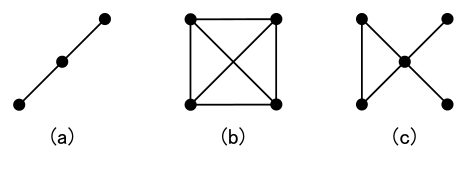
<figcaption class="paper-figure-caption"><b>Fig 1.</b> Fig. 1. Graphs to be colored. (a) Graph consisting of three nodes and two edges to be colored using up to</figcaption>
</figure>
<figure class="paper-figure-card">
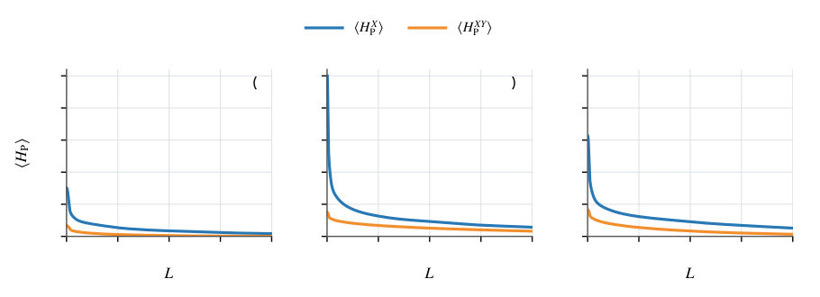
<figcaption class="paper-figure-caption"><b>Fig 2.</b> Fig. 2. Expectation values of the problem Hamiltonians for FALQON as functions of the number of layers.</figcaption>
</figure>
<figure class="paper-figure-card">
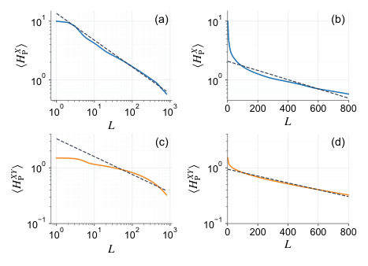
<figcaption class="paper-figure-caption"><b>Fig 3.</b> Fig. 3. Log-log and semi-log plots of Fig. 2(b) and their regression curves. (a) and (b) plot the X-FALQON</figcaption>
</figure>
<figure class="paper-figure-card">
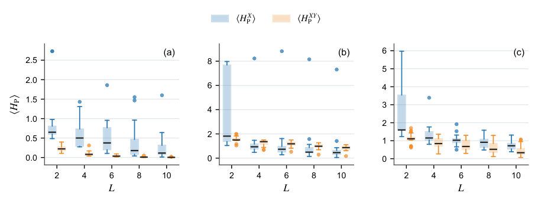
<figcaption class="paper-figure-caption"><b>Fig 4.</b> Fig. 4. Box-and-whisker plots of expectation values of the problem Hamiltonians for the QAOA with L =</figcaption>
</figure>
<figure class="paper-figure-card">
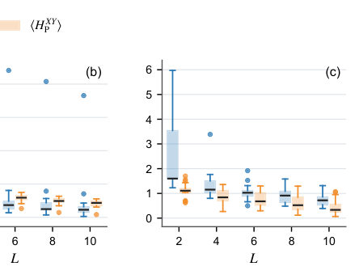
<figcaption class="paper-figure-caption"><b>Fig 5.</b> Figure 4 illustrates ⟨HX p ⟩and ⟨HXY p ⟩for the X-QAOA and XY-QAOA. Although the ex-</figcaption>
</figure>
</div>

<p><strong>Summary.</strong> This work applies quantum optimization techniques, specifically the FALQON algorithm, to solve graph coloring problems. By comparing X and XY mixers, the authors show that the XY mixer yields better performance metrics, suggesting a more robust approach for quantum computation in this domain.</p>
<p><strong>Why it may be interesting.</strong> The comparison between FALQON and QAOA, along with the specific analysis of mixer types (X vs. XY), provides concrete benchmarks for quantum optimization algorithms applicable to hard combinatorial problems.</p>
<details>
<summary>Detailed structure</summary>
<p><strong>Main problem.</strong> The paper addresses the challenge of solving constrained combinatorial optimization problems, specifically graph coloring, using quantum computation.</p>
<p><strong>Main result.</strong> The Feedback-Based Algorithm for Quantum Optimization (FALQON) utilizing an XY mixer demonstrated superior performance compared to the conventional X mixer in terms of success probability and fair sampling.</p>
<p><strong>Method.</strong> The authors compare FALQON, which uses feedback from measurements to avoid parameter optimization, against QAOA, which requires classical optimization of variational parameters.</p>
<p><strong>Model / system.</strong> The model involves mapping graph coloring to a quantum Hamiltonian, utilizing two types of mixers (X and XY) and evolving the state according to a time-dependent Hamiltonian derived from the problem and mixer terms.</p>
<p><strong>Key observables.</strong> Expectation value of the problem Hamiltonian ($\langle H_p 
angle$), success probability of graph coloring, and fair sampling error ($R_{err}$).</p>
<p><strong>Important parameters / regimes.</strong> The number of layers ($L$) for QAOA and FALQON, and the fixed constraint parameter $\lambda=0.5$.</p>
<p><strong>Assumptions / limitations.</strong> The XY mixer derivation assumes that the vertices $v$ and $w$ are distinct when simplifying commutators. The simulation uses noiseless statevector methods.</p>
<p><strong>Figures summary.</strong> Figures illustrate the three tested graph coloring problems, show the decay of expectation values ($\langle H_p 
angle$) with increasing layers ($L$), and compare success probabilities and fair sampling errors between X and XY mixers.</p>
<p><strong>Paper structure.</strong> The paper introduces the problem, details the FALQON framework and the XY mixer derivation, and then presents comparative simulations showing the performance metrics (expectation value, success probability, fair sampling) for different mixer types and algorithms.</p>
</details>
<details>
<summary>Abstract</summary>
<p>The feedback-based algorithm for quantum optimization (FALQON), which is an extension of the quantum approximate optimization algorithm (QAOA), is a promising approach for finding approximate solutions to combinatorial optimization problems. The FALQON avoids the optimization of variational parameters by using information derived from iterative measurements. To solve a constrained combinatorial optimization problem, it is sometimes more efficient to use an XY mixer rather than the conventional X mixer. We applied the FALQON with the XY mixer to graph coloring and investigated the expectation value of the problem Hamiltonian, success probability of graph coloring, and fair sampling for several small-scale problems. The FALQON with the XY mixer exhibited better performance than that with the X mixer.</p>
</details>
<p><sub><a href="#top">↑ back to top</a></sub></p>

<p><a id="paper-2609.30424"></a></p>
<h3 id="unified-description-of-random-motions-and-generalized-fokker-planck-equations"><a href="http://arxiv.org/abs/2609.30424v1">Unified description of random motions and generalized Fokker-Planck equations</a></h3>
<p><strong>Authors:</strong> Luca Angelani<br>
<strong>Type:</strong> theory · <strong>Category:</strong> statistical mechanics · <strong>PDF:</strong> <a href="https://arxiv.org/pdf/2609.30424v1">https://arxiv.org/pdf/2609.30424v1</a><br>
<strong>Analysis basis:</strong> full PDF text, analyzed in chunks
<strong>Topic relevance:</strong> <code>Keldysh / 2PI / non-Gaussian methods</code> <strong>2/5</strong> · <code>correlated / nonlocal dissipation</code> <strong>2/5</strong> · <code>methods for driven-dissipative</code> <strong>2/5</strong> · <code>analog quantum simulation</code> <strong>1/5</strong> · <code>driven-dissipative phase transition</code> <strong>1/5</strong> · <code>non-equilibrium universality</code> <strong>1/5</strong></p>
<div class="figure-strip-hint">↔ Scroll figures horizontally</div>
<div class="paper-figures-scroll">
<figure class="paper-figure-card">
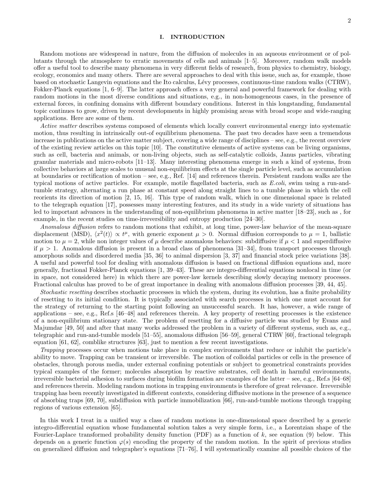
<figcaption class="paper-figure-caption"><b>Fig 1.</b> Low-resolution page preview, page 2</figcaption>
</figure>
<figure class="paper-figure-card">
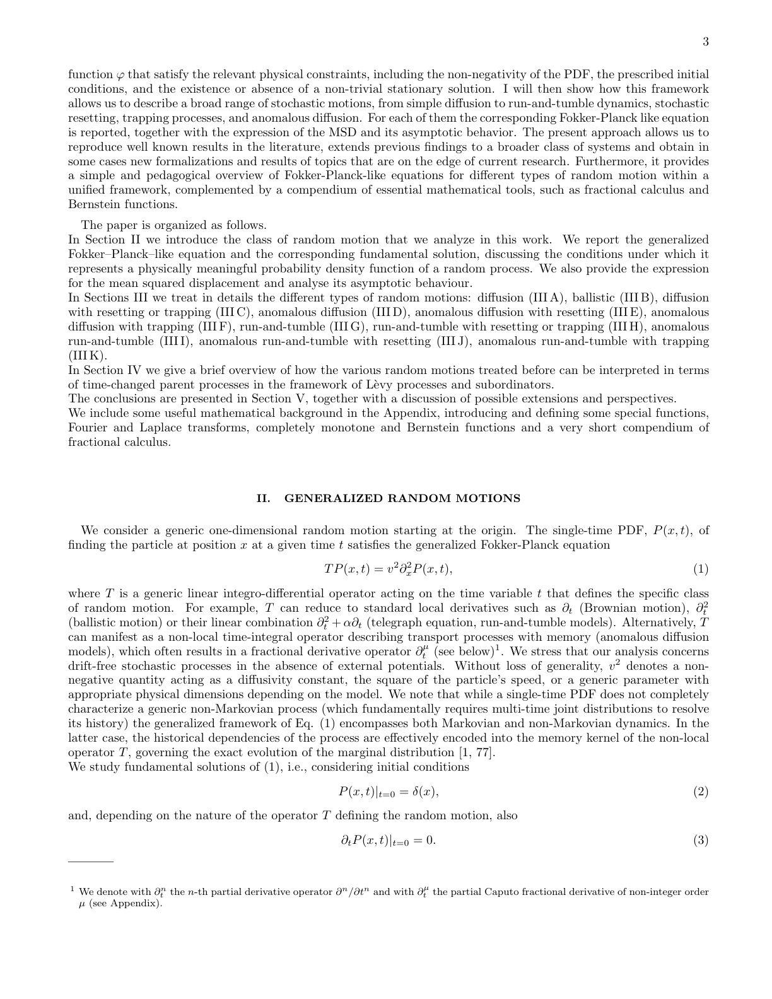
<figcaption class="paper-figure-caption"><b>Fig 2.</b> Low-resolution page preview, page 3</figcaption>
</figure>
<figure class="paper-figure-card">
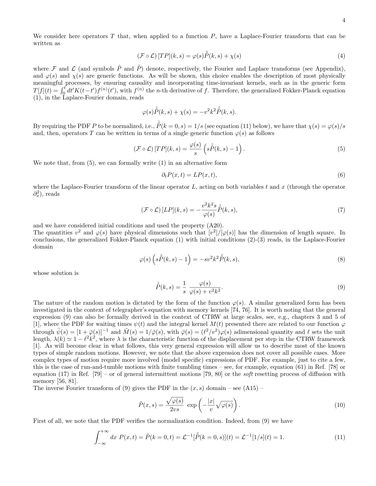
<figcaption class="paper-figure-caption"><b>Fig 3.</b> Low-resolution page preview, page 4</figcaption>
</figure>
<figure class="paper-figure-card">
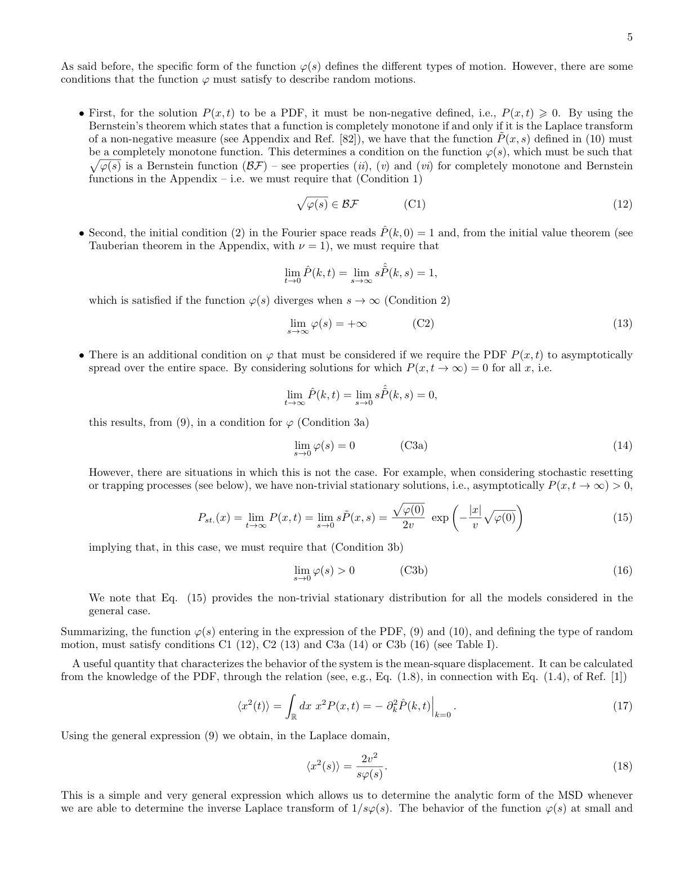
<figcaption class="paper-figure-caption"><b>Fig 4.</b> Low-resolution page preview, page 5</figcaption>
</figure>
<figure class="paper-figure-card">
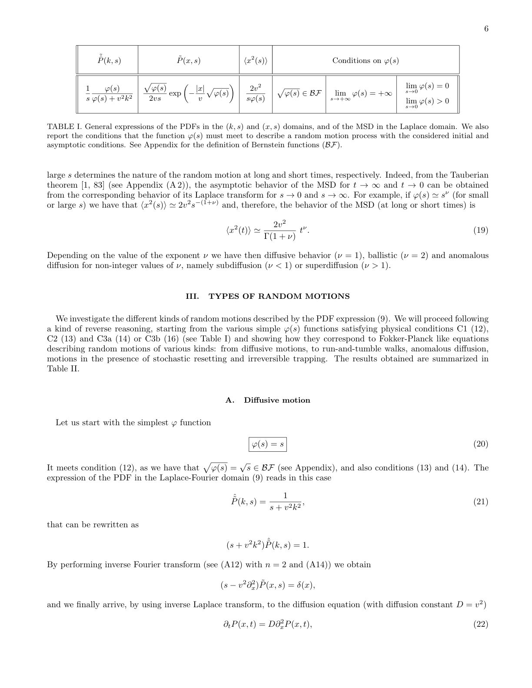
<figcaption class="paper-figure-caption"><b>Fig 5.</b> Low-resolution page preview, page 6</figcaption>
</figure>
</div>

<p><strong>Summary.</strong> This review unifies the description of various random motions, from simple diffusion to anomalous transport, using a generalized Fokker-Planck equation approach. By analyzing the fundamental solution in the Laplace-Fourier domain via a function $\varphi(s)$, the authors derive a broad class of stochastic dynamics. This provides a powerful mathematical tool for characterizing non-Markovian processes in condensed matter and statistical physics.</p>
<p><strong>Why it may be interesting.</strong> The mathematical tools developed (Bernstein functions, fractional calculus) are central to modeling non-Markovian dynamics, which are crucial for describing complex open quantum systems or transport phenomena in mesoscopic physics.</p>
<details>
<summary>Detailed structure</summary>
<p><strong>Main problem.</strong> To provide a unified mathematical framework for describing diverse types of random motions in one dimension, particularly those governed by generalized Fokker-Planck-like equations.</p>
<p><strong>Main result.</strong> The framework successfully unifies descriptions for simple diffusion, anomalous diffusion, active motion, and processes with stochastic resetting by relating them to the functional form of a generic function $\varphi(s)$ in the Laplace-Fourier domain.</p>
<p><strong>Method.</strong> The analysis uses Laplace and Fourier transforms to solve the generalized integro-differential equation, identifying constraints on the function $\varphi(s)$ using concepts from Bernstein functions and fractional calculus.</p>
<p><strong>Model / system.</strong> The model is a generic one-dimensional random motion characterized by a single-time Probability Density Function $P(x, t)$, which is governed by a generalized Fokker-Planck equation. Specific physical examples include Brownian motion, active transport, and processes with trapping.</p>
<p><strong>Key observables.</strong> The Probability Density Function $P(x, t)$, the Mean-Square Displacement (MSD) $\langle x^2(t) 
angle$, and the long-time power-law exponent $\mu$ of the MSD.</p>
<p><strong>Important parameters / regimes.</strong> The function $\varphi(s)$ dictates the dynamics; key parameters include diffusion coefficients ($D$) and the time-scaling exponent $
u$ derived from $\varphi(s) \sim s^
u$.</p>
<p><strong>Assumptions / limitations.</strong> The analysis focuses on drift-free stochastic processes in the absence of external potentials, and the mathematical simplification relies on the fundamental solution having a Lorentzian shape in the Fourier-Laplace domain.</p>
<p><strong>Paper structure.</strong> The paper proceeds by establishing the general theory using the Laplace-Fourier domain, deriving the universal solution form involving $\varphi(s)$, and then systematically applying this framework to derive and analyze specific stochastic dynamics, including interpretations via time-changed processes and subordinators.</p>
</details>
<details>
<summary>Abstract</summary>
<p>This review surveys diverse types of random motion within a unified framework, introducing essential mathematical tools, including special functions and fractional calculus, in a pedagogical manner. We focus on generalized random motions in one-dimensional space described by Fokker-Planck like equations, whose fundamental solutions take a universal and simple form in the Laplace-Fourier domain in terms of a generic function $\varphi(s)$. By exploring the functional forms of $\varphi(s)$ consistent with physical constraints, we derive a broad class of stochastic dynamics. This includes Brownian and active motion, simple and anomalous diffusion, and processes featuring stochastic resetting or trapping mechanisms. For each case, we provide the corresponding kinetic equation, explicit solutions (where available), and mean-square displacements alongside their asymptotic behaviors. Finally, we discuss the physical interpretation of these motions through the lens of time-changed processes and subordinators.</p>
</details>
<p><sub><a href="#top">↑ back to top</a></sub></p>

<p><a id="paper-2609.31209"></a></p>
<h3 id="bypassing-no-go-theorems-on-mixed-classical-quantum-systems-the-counterexample-of-hybrid-van-hove-theory"><a href="http://arxiv.org/abs/2609.31209v1">Bypassing no-go theorems on mixed classical-quantum systems: the (counter)example of hybrid van Hove theory</a></h3>
<p><strong>Authors:</strong> Marcel Reginatto, Andrés Darío Bermúdez Manjarres, Sebastian Ulbricht<br>
<strong>Type:</strong> theory · <strong>Category:</strong> other · <strong>PDF:</strong> <a href="https://arxiv.org/pdf/2609.31209v1">https://arxiv.org/pdf/2609.31209v1</a><br>
<strong>Analysis basis:</strong> full PDF text, analyzed in chunks
<strong>Topic relevance:</strong> <code>Keldysh / 2PI / non-Gaussian methods</code> <strong>2/5</strong> · <code>methods for driven-dissipative</code> <strong>2/5</strong> · <code>analog quantum simulation</code> <strong>1/5</strong> · <code>correlated / nonlocal dissipation</code> <strong>1/5</strong> · <code>driven-dissipative phase transition</code> <strong>1/5</strong> · <code>quantum measurements</code> <strong>1/5</strong></p>
<div class="figure-strip-hint">↔ Scroll figures horizontally</div>
<div class="paper-figures-scroll">
<figure class="paper-figure-card">
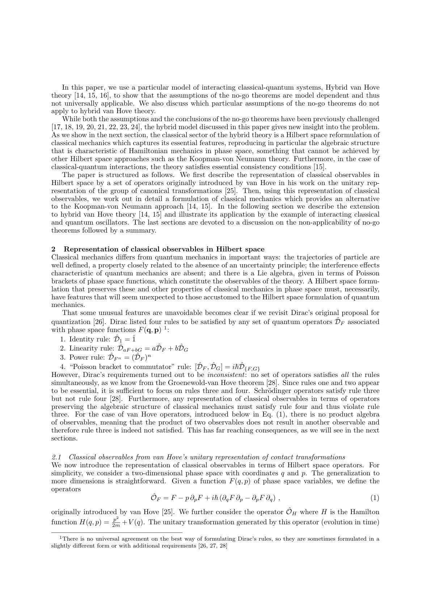
<figcaption class="paper-figure-caption"><b>Fig 1.</b> Low-resolution page preview, page 2</figcaption>
</figure>
<figure class="paper-figure-card">
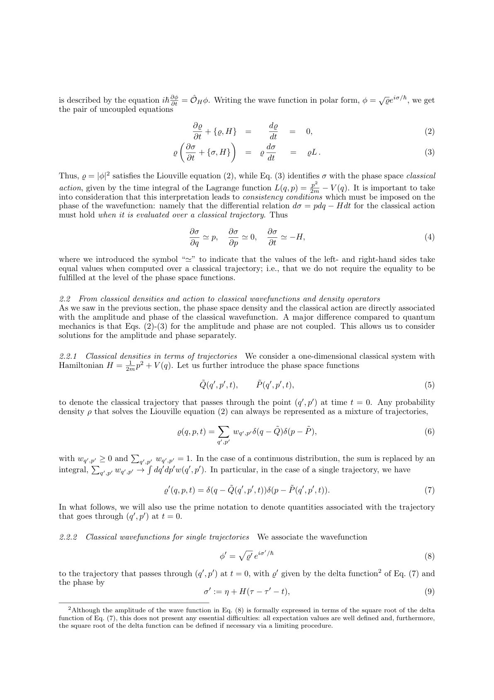
<figcaption class="paper-figure-caption"><b>Fig 2.</b> Low-resolution page preview, page 3</figcaption>
</figure>
<figure class="paper-figure-card">
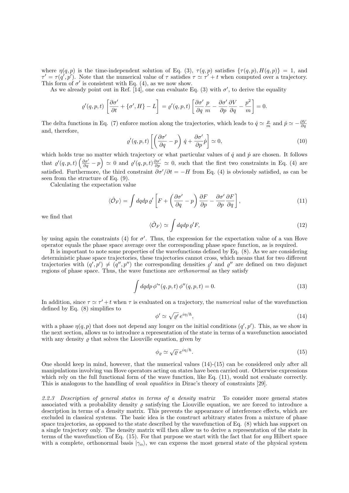
<figcaption class="paper-figure-caption"><b>Fig 3.</b> Low-resolution page preview, page 4</figcaption>
</figure>
<figure class="paper-figure-card">
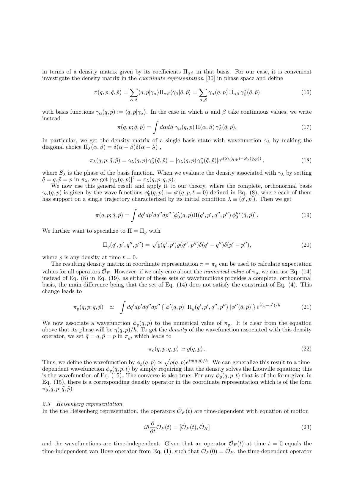
<figcaption class="paper-figure-caption"><b>Fig 4.</b> Low-resolution page preview, page 5</figcaption>
</figure>
<figure class="paper-figure-card">
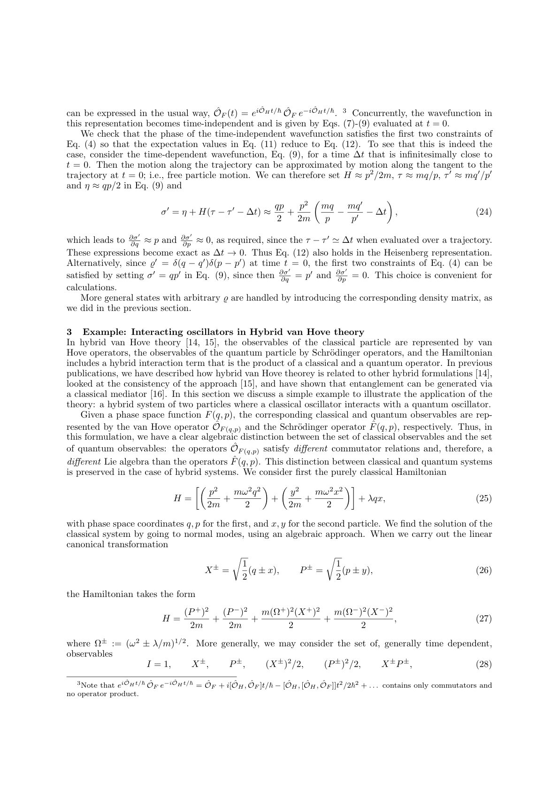
<figcaption class="paper-figure-caption"><b>Fig 5.</b> Low-resolution page preview, page 6</figcaption>
</figure>
</div>

<p><strong>Summary.</strong> This paper develops the hybrid van Hove theory to model mixed classical-quantum systems, reformulating classical observables as operators within a Hilbert space. By demonstrating that this approach maintains the algebraic structure of classical mechanics, the authors show how to consistently calculate expectation values in hybrid systems. Crucially, this framework challenges the universality of existing no-go theorems by showing they rely on overly restrictive assumptions.</p>
<p><strong>Why it may be interesting.</strong> This work is highly relevant for theoretical physicists working on open quantum systems or quantum optics, as it provides a concrete, algebraically consistent framework for modeling systems where classical dynamics and quantum evolution are coupled.</p>
<details>
<summary>Detailed structure</summary>
<p><strong>Main problem.</strong> The paper addresses the challenge of constructing consistent theoretical frameworks for mixed classical-quantum systems that can bypass established 'no-go theorems' in the field.</p>
<p><strong>Main result.</strong> The authors introduce and validate the hybrid van Hove theory, demonstrating that its specific algebraic structure allows it to reproduce classical expectation values while remaining consistent with quantum mechanics, thereby circumventing the restrictive assumptions of existing no-go theorems.</p>
<p><strong>Method.</strong> The core method involves representing classical observables as operators satisfying a commutation algebra isomorphic to the classical Poisson algebra, utilizing van Hove's unitary representation of contact transformations.</p>
<p><strong>Model / system.</strong> The theory is applied to hybrid systems, such as interacting classical and quantum oscillators, where the Hamiltonian is promoted to a unique hybrid operator acting on the mixed system.</p>
<p><strong>Key observables.</strong> Phase space density $\varrho(q, p, t)$, expectation values $\langle \hat{O}F 
angle$, and the time evolution of hybrid normal mode coordinates $\hat{\Theta}X_{\pm}(t)$.</p>
<p><strong>Important parameters / regimes.</strong> Planck's constant ($\hbar$), coupling constants ($\lambda$), and characteristic frequencies ($\Omega_{\pm}$).</p>
<p><strong>Assumptions / limitations.</strong> The approach requires imposing specific consistency conditions on the phase of the classical wavefunction, and it critically challenges the universality of the assumptions underpinning existing no-go theorems.</p>
<p><strong>Figures summary.</strong> Not specified.</p>
<p><strong>Paper structure.</strong> The paper first establishes the algebraic framework for classical mechanics using van Hove operators. It then extends this to hybrid systems, applying it to interacting oscillators, and finally uses the resulting structure to argue that the no-go theorems are based on overly restrictive assumptions.</p>
</details>
<details>
<summary>Abstract</summary>
<p>Motivated by models of mixed quantum-classical hybrid theories, we consider the representation of classical observables as Hilbert-space operators based on van Hove's unitary representation of contact transformations. This leads to a reformulation of classical mechanics where the phase space density satisfies the Liouville equation and, more importantly, classical observables are represented by van Hove operators that satisfy a commutation algebra isomorphic to the classical Poisson algebra of functions in phase space. Thus, this Hilbert space approach captures all the essential features of the phase space formulation of classical mechanics in that it reproduces its algebraic structure -- something that is not achieved by other approaches such as the Koopman-von Neumann theory. As an important feature, the definition of appropriate physical states in this formalism imposes certain natural requirements on the phase of the classical wave function, which ensure correct expectation values for the observables. Furthermore, we discuss how to extend the approach to the hybrid van Hove theory of mixed classical-quantum systems and illustrate its application with the example of interacting classical and quantum oscillators. Finally, we focus on the question of how hybrid van Hove theory evades no-go theorems on mixed classical-quantum systems and point to the various assumptions of the no-go theorems that do not apply to our approach. This demonstrates that these no-go theorems are not universally applicable, contrary to their original claims.</p>
</details>
<p><sub><a href="#top">↑ back to top</a></sub></p>

<p><a id="paper-2609.31194"></a></p>
<h3 id="optical-characterization-of-excited-state-spin-hamiltonians-and-clock-transitions-at-telecommunication-wavelength-in-tm3yalo3"><a href="http://arxiv.org/abs/2609.31194v1">Optical characterization of excited-state spin Hamiltonians and clock transitions at telecommunication wavelength in Tm3+:YAlO3</a></h3>
<p><strong>Authors:</strong> Akshay Babu Karyath, Luozhen Li, Julien Bertrand, Alexandre Kings, Tianyang Shen, Gabriel Aeppli, Simon Gerber, Guy Matmon, Wolfgang Tittel<br>
<strong>Type:</strong> experiment · <strong>Category:</strong> other · <strong>PDF:</strong> <a href="https://arxiv.org/pdf/2609.31194v1">https://arxiv.org/pdf/2609.31194v1</a><br>
<strong>Analysis basis:</strong> full PDF text, analyzed in chunks
<strong>Topic relevance:</strong> <code>quantum measurements</code> <strong>2/5</strong> · <code>QC/QI experiment</code> <strong>1/5</strong> · <code>analog quantum simulation</code> <strong>1/5</strong> · <code>quantum optics experiment</code> <strong>1/5</strong> · <code>superradiant laser</code> <strong>1/5</strong></p>
<div class="figure-strip-hint">↔ Scroll figures horizontally</div>
<div class="paper-figures-scroll">
<figure class="paper-figure-card">
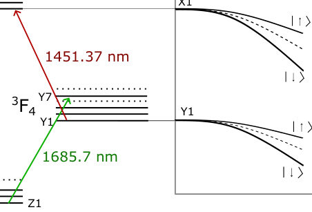
<figcaption class="paper-figure-caption"><b>Fig 1.</b> FIG. 1. Energy level diagram of Tm3+:YAlO3 where 3H6 is the ground-state manifold ; 3F4 and 3H4 are excited-state manifolds. At right, a schematic of the evolution of the lowest Stark levels of the 3F4 and 3H4 manifolds (Y1 and X1, respectively) with applied magnetic field. Each level shifts quadratically (dashed line, due to the quadratic Zeeman shift) and splits linearly into two nuclear-spin sublevels (solid line, caused by the enhanced nuclear Zeeman effect), with total splittings δeX1 and δeY1, respectively. |↑⟩and |↓⟩denotes the nuclear spin states. Energy axes not to scale.</figcaption>
</figure>
<figure class="paper-figure-card">
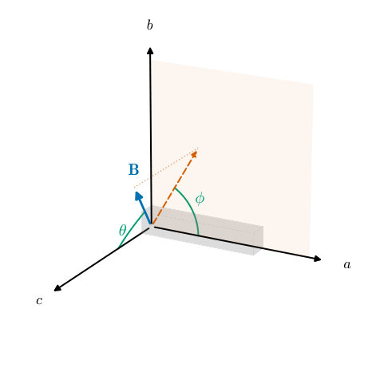
<figcaption class="paper-figure-caption"><b>Fig 2.</b> FIG. 2. Definition of the magnetic-field coordinate system relative to the crystal axes (a, b, c) of Tm3+:YAlO3. The magnetic field B is parametrized by the polar angle θ, mea- sured with respect to the c axis and the azimuthal angle ϕ, measured in the ab plane with respect to the a axis. The gray box indicates the cut of the Tm3+:YAlO3 crystal.</figcaption>
</figure>
<figure class="paper-figure-card">
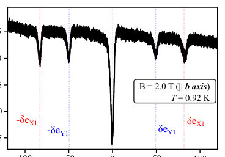
<figcaption class="paper-figure-caption"><b>Fig 3.</b> FIG. 3. Spectral holes of the 1451 nm Y1-X1 transition at T=0.92 K with an applied magnetic field of 2 T oriented along the b-axis of the crystal. The figure shows a central hole at zero detuning together with four side holes located symmetri- cally about it, which arise from the inhomogeneous broaden- ing of the transition along with atomic level splittings. When B ∥b, the detunings of the inner pair (blue dotted lines) and the outer pair (red dotted lines) correspond to the enhanced nuclear Zeeman splittings δeY1 and δeX1 of the Y1 and X1 levels, respectively.</figcaption>
</figure>
<figure class="paper-figure-card">
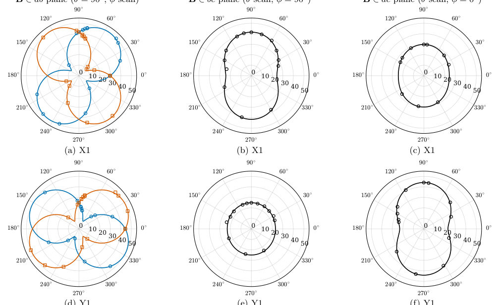
<figcaption class="paper-figure-caption"><b>Fig 4.</b> FIG. 4. Angular dependence of the enhanced nuclear Zeeman splitting rate for the X1 level of the 3H4 manifold and the Y1 level of the 3F4 manifold of Tm3+:YAlO3. Top row (a)-(c): X1; bottom row (d)-(f): Y1. For B within the ab plane (panels (a),(d)) site 1 and site 2 are magnetically inequivalent, resulting in distinct splittings (blue circles, site 1; orange squares, site 2), whereas for B within the bc and ac planes (panels (b),(e) and (c),(f), respectively), the sites are magnetically equivalent and yield the same splittings. Markers depict measured data; solid lines are fits using Eq. (8). Radial axis: splitting rate in MHz/T. The procedure for assigning measurements to site 1 and site...</figcaption>
</figure>
<figure class="paper-figure-card">
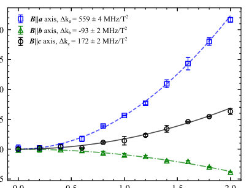
<figcaption class="paper-figure-caption"><b>Fig 5.</b> FIG. 5. Detuning of the center of the inhomogeneous broad- ened line of the excited-state transition (Y1 - X1) as a func- tion of magnetic field amplitude, for B oriented along the three crystal axes of Tm3+:YAlO3. Each set of data is fitted with a quadratic function ∆ν = ki · B2 (i=a,b,c), after sub- tracting the zero-field (B = 0 T) baseline detuning. The fitted quadratic shift rates ∆ki are indicated, including uncertain- ties. The error bars of the individual data points characterize the uncertainty with which the center of the inhomogeneous absorption line could be established.</figcaption>
</figure>
</div>

<p><strong>Summary.</strong> This experimental study characterizes the magnetic spin Hamiltonians of $  ext{Tm}^{3+}$ ions in $ ext{YAlO}_3$ using high-resolution spectroscopy at telecom wavelengths. By measuring field-dependent spectral splittings, the authors quantified the effects of the nuclear and electron Zeeman interactions. The results enable the prediction of stable optical clock transitions, advancing the use of these materials for quantum information applications.</p>
<p><strong>Why it may be interesting.</strong> This work is highly relevant as it uses precise spectroscopic techniques to map out the fundamental quantum mechanical interactions (hyperfine, Zeeman) governing rare-earth ion energy levels, which is crucial for developing solid-state quantum memories and quantum sensors.</p>
<details>
<summary>Detailed structure</summary>
<p><strong>Main problem.</strong> The paper aims to characterize the magnetic properties of the lowest Stark levels of the $3F_4$ and $3H_4$ excited-state manifolds of $ ext{Tm}^{3+}$ in $  ext{YAlO}_3$ to establish their spin Hamiltonians.</p>
<p><strong>Main result.</strong> The authors successfully determined the spin Hamiltonians by measuring field-dependent splittings (enhanced nuclear Zeeman effect) and quadratic shifts, allowing them to predict specific optical clock transitions.</p>
<p><strong>Method.</strong> Measurements were performed using spectral hole burning on the $1451 	ext{ nm}$ Zero-Phonon Line (ZPL) while applying controlled external magnetic fields up to $2 	ext{ T}$.</p>
<p><strong>Model / system.</strong> The system is $ ext{Tm}^{3+}$ ions in $ ext{YAlO}_3$, analyzed using a generalized spin Hamiltonian incorporating hyperfine, Zeeman, and crystal-field interactions. The analysis focuses on the $  ext{Y1} \leftrightarrow     ext{X1}$ transition between the $3H_4$ and $3F_4$ manifolds.</p>
<p><strong>Key observables.</strong> Frequency detuning of side holes, inhomogeneous line shift (quadratic Zeeman effect), and the magnetic field dependence of these shifts.</p>
<p><strong>Important parameters / regimes.</strong> Cryogenic temperatures ($\sim 800 	ext{ mK}$), magnetic fields up to $2 	ext{ T}$, and the telecom E-band wavelength ($\sim 1451 	ext{ nm}$).</p>
<p><strong>Assumptions / limitations.</strong> The determination of the Hamiltonian relies on fitting measured splittings to theoretical models, and the estimation of coherence time ($    ext{T}_2$) using the Hessian matrix provides only a lower bound.</p>
<p><strong>Figures summary.</strong> Figures illustrate energy level diagrams showing transitions, the magnetic field coordinate system relative to crystal axes, and spectral hole profiles demonstrating central and side-hole splittings.</p>
<p><strong>Paper structure.</strong> The paper progresses from establishing the physical context and the general Hamiltonian, through detailed measurements of Zeeman splittings and quadratic shifts using spectral hole burning, culminating in the derivation of the spin Hamiltonians and the prediction of clock transition points.</p>
</details>
<details>
<summary>Abstract</summary>
<p>The zero-phonon line (ZPL) between the two excited-state manifolds 3F4 and 3H4 of the trivalent thulium ion in yttrium aluminum perovskite (Tm3+:YAlO3) lies within the telecom E-band at around 1451 nm and exhibits an optical coherence time of a few μs at cryogenic temperatures. To improve this time in view of potential applications, e.g. single-photon sources and optical quantum memory, we characterized the magnetic properties of the lowest Stark levels of these two manifolds. Varying the external magnetic field amplitude and orientation, we measured the enhanced nuclear Zeeman splitting by probing the field-dependent frequency detuning of side holes created by means of spectral hole burning, and we characterized the inhomogeneous line shift caused by the quadratic Zeeman interaction. Together, this allowed us to establish the spin Hamiltonians for the lowest Stark level of the 3F4 and 3H4 manifolds, and to predict optical clock transitions for particular orientations and magnitudes of the magnetic field</p>
</details>
<p><sub><a href="#top">↑ back to top</a></sub></p>

<p><a id="paper-2609.30381"></a></p>
<h3 id="cooper-pair-charge-kondo-effect-in-a-hybrid-quantum-dot-superconductor-device"><a href="http://arxiv.org/abs/2609.30381v1">Cooper pair charge Kondo effect in a hybrid quantum dot - superconductor device</a></h3>
<p><strong>Authors:</strong> Luca Gonfiantini, Lorenzo Maffi, Michele Burrello<br>
<strong>Type:</strong> theory · <strong>Category:</strong> strongly correlated electrons · <strong>PDF:</strong> <a href="https://arxiv.org/pdf/2609.30381v1">https://arxiv.org/pdf/2609.30381v1</a><br>
<strong>Analysis basis:</strong> full PDF text, analyzed in chunks
<strong>Topic relevance:</strong> <code>Keldysh / 2PI / non-Gaussian methods</code> <strong>2/5</strong> · <code>correlated / nonlocal dissipation</code> <strong>1/5</strong> · <code>methods for driven-dissipative</code> <strong>1/5</strong></p>
<div class="figure-strip-hint">↔ Scroll figures horizontally</div>
<div class="paper-figures-scroll">
<figure class="paper-figure-card">
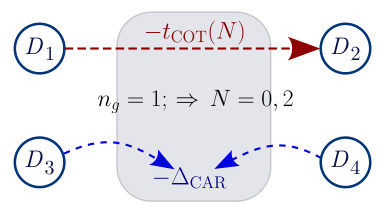
<figcaption class="paper-figure-caption"><b>Fig 1.</b> Figure 1. Sketch of the poor man’s tetron. (a) The four quantum dots Dα are realized within two parallel nanowires (blue) through suitable electrostatic gates, depicted in gold alongside them. The two nanowires are connected by a cen- tral floating superconducting island (gray). Each quantum dot is tunnel-coupled to the central superconducting region and an external lead. (b) Graphical representation of the cotunneling (red) and crossed Andreev reflection (blue) pro- cesses dictating the dynamics of electrons at low energy close to the charge degeneracy point.</figcaption>
</figure>
<figure class="paper-figure-card">
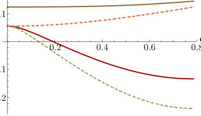
<figcaption class="paper-figure-caption"><b>Fig 2.</b> Figure 2. Energy of the ground states of the sectors with 1 ≤Nt ≤5 as a function of the spin-orbit parameter α at the charge degeneracy point ng = 1, µD = µSC = 0, for ∆= 5t and EC = 0.5t. The energies are calculated based on the effective Hamiltonian (5) and expressed in units of the tunneling amplitude t. The PH symmetric ground states with Nt = 2, 4 and Pd = +1 are the global ground states for α &gt; 0. At α = π/6, tCOT(0) ≈0.02t and ∆CAR ≈0.19t.</figcaption>
</figure>
<figure class="paper-figure-card">
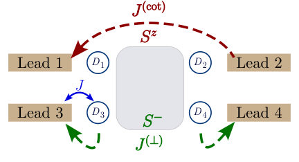
<figcaption class="paper-figure-caption"><b>Fig 3.</b> Figure 3. Main processes in the Hamiltonian HK. The blue arrow represents the (first-order) lead-dot couplings HJ. The dashed red and green arrows respectively depict the J(cot) and J(⊥) second-order terms in Eqs. (20) and (21).</figcaption>
</figure>
<figure class="paper-figure-card">
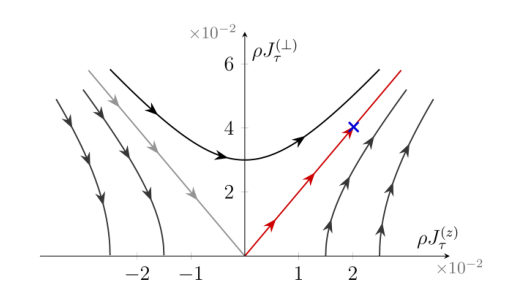
<figcaption class="paper-figure-caption"><b>Fig 4.</b> Figure 4. RG flow of the Kondo couplings based on the second-order equations. A typical value of the bare couplings ρJ(⊥) τ ≃0.04, ρJ(z) τ ≃0.02 is indicated in the plot by a blue cross. It corresponds to the estimates in Eq. (C7,C8) in a strong coupling regime, J ≃δE(3), and for the following pa- rameter choice: ∆= 2.5t, EC = t, α = π/6, ρ = 3.4meV−1.</figcaption>
</figure>
<figure class="paper-figure-card">
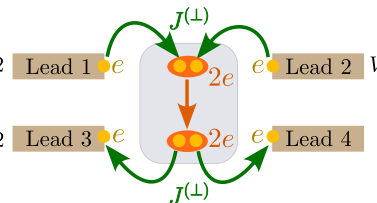
<figcaption class="paper-figure-caption"><b>Fig 5.</b> Figure 5. Sketch of the processes generating the interwire Andreev conductance. The two nanowires are subject to a voltage bias Vb and the Andreev conductance GCAR accounts for processes in which a Cooper pair is formed by electrons in leads 1 and 2, and split into two correlated electrons injected in leads 3 and 4.</figcaption>
</figure>
</div>

<p><strong>Summary.</strong> This theoretical work predicts a charge Kondo effect in a quantum dot coupled to a superconductor, utilizing a 'poor man's tetron' geometry. By applying Renormalization Group techniques, the authors determine that the system exhibits non-Fermi liquid behavior characterized by a universal, quantized conductance. This work is significant for understanding how superconducting correlations can mediate strong electron-electron interactions in nanoscale devices.</p>
<p><strong>Why it may be interesting.</strong> The study bridges superconducting proximity effects (Andreev reflections) with strongly correlated electron physics (Kondo effect), providing a concrete platform for observing exotic many-body phenomena in solid-state devices.</p>
<details>
<summary>Detailed structure</summary>
<p><strong>Main problem.</strong> The paper investigates the onset and characteristics of a charge Kondo effect mediated by Cooper pairs in a hybrid quantum dot-superconductor device.</p>
<p><strong>Main result.</strong> The theory predicts a two-channel charge Kondo effect, leading to non-Fermi liquid signatures characterized by a fixed-point conductance of $e^2/\pi$.</p>
<p><strong>Method.</strong> The analysis employs Renormalization Group (RG) techniques and second-order perturbation theory to study the effective Hamiltonian derived from the system's coupling to the superconducting leads.</p>
<p><strong>Model / system.</strong> The physical system is a 'poor man's tetron'—a tunable hybrid device comprising four quantum dots coupled to a floating superconducting island. The physics is governed by the interplay between single-particle tunneling, charging energy, and crossed Andreev reflections.</p>
<p><strong>Key observables.</strong> Fractional conductance ($  ext{G}_{    ext{CAR}}$), non-Fermi liquid signatures, and the fixed-point conductance value ($e^2/\pi$).</p>
<p><strong>Important parameters / regimes.</strong> Charging energy ($E_C$), superconducting gap ($\Delta$), and the system being tuned near the particle-hole symmetric point.</p>
<p><strong>Assumptions / limitations.</strong> The analysis assumes the system is tuned near the particle-hole symmetric point, and in some calculations, it assumes the weak-tunneling limit or uses approximations for gapless bulk modes.</p>
<p><strong>Figures summary.</strong> Figure 1 sketches the poor man's tetron structure, illustrating cotunneling and crossed Andreev reflection. Figure 8 shows the ratio $ ilde{R}^{-1}$ dependence on the superconducting potential $\mu_{	ext{SC}}$.</p>
<p><strong>Paper structure.</strong> The paper systematically analyzes the system by first describing the poor man's tetron, then applying RG techniques to analyze the weak and strong coupling regimes, and finally calculating the conductance using perturbation theory to find the fixed-point behavior.</p>
</details>
<details>
<summary>Abstract</summary>
<p>We consider a tunable hybrid device composed of four quantum dots and a floating superconducting island -- the so-called poor man's tetron -- close to its effective particle-hole symmetric point and coupled to four external leads. We predict the onset of a charge Kondo effect mediated by Cooper pairs, resulting from the strong crossed Andreev reflections that dominate its low-energy behavior. This two-channel Kondo effect makes the poor man's tetron behave as a double Cooper pair splitter, turning uncorrelated incoming electrons into spatially separated Cooper pairs. Based on renormalization group techniques, we analyze both its weak and strong coupling regimes and we determine its non-Fermi liquid signatures. Our estimates indicate that the fractional conductance and transport features associated to this two-channel charge Kondo effect can be observed over a broad range of temperatures and anisotropies in realistic experimental conditions.</p>
</details>
<p><sub><a href="#top">↑ back to top</a></sub></p>

<p><a id="paper-2609.31459"></a></p>
<h3 id="nonstabilizerness-of-quantum-tensor-network-states-is-intractable-in-two-dimensions"><a href="http://arxiv.org/abs/2609.31459v1">Nonstabilizerness of quantum tensor network states is intractable in two dimensions</a></h3>
<p><strong>Authors:</strong> Gianluca Esposito, Georgios Styliaris<br>
<strong>Type:</strong> theory · <strong>Category:</strong> other · <strong>PDF:</strong> <a href="https://arxiv.org/pdf/2609.31459v1">https://arxiv.org/pdf/2609.31459v1</a><br>
<strong>Analysis basis:</strong> full PDF text, analyzed in chunks
<strong>Topic relevance:</strong> <code>methods for driven-dissipative</code> <strong>2/5</strong> · <code>analog quantum simulation</code> <strong>1/5</strong></p>
<div class="figure-strip-hint">↔ Scroll figures horizontally</div>
<div class="paper-figures-scroll">
<figure class="paper-figure-card">
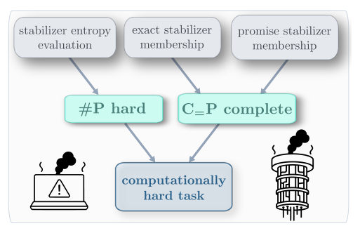
<figcaption class="paper-figure-caption"><b>Fig 1.</b> FIG. 1. We establish that computing SE of 2D PEPS or just deciding whether a PEPS is a stabilizer state, exactly or approximately, are hard computational tasks for classical and quantum computers. An efficient classical algorithm for either of those tasks would imply the collapse of the polynomial hierarchy, and an efficient quantum algorithm would imply the collapse NP ⊆BQP: both implications are considered highly unlikely.</figcaption>
</figure>
<figure class="paper-figure-card">
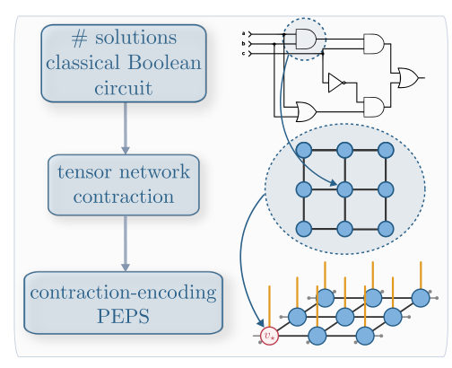
<figcaption class="paper-figure-caption"><b>Fig 2.</b> FIG. 2. Graphical schematizations of the proofs of compu- tational hardness in this work. The main idea is always to encode the number of satisfying assignments of a Boolean cir- cuit in a scalar TN contraction, then embed its result in the 1-qubit amplitude of a specific PEPS.</figcaption>
</figure>
<figure class="paper-figure-card">

<figcaption class="paper-figure-caption"><b>Fig 3.</b> FIG. 3. Reduction proving C=P-hardness of exact PEPS stabilizer membership. The zero test for a function g ∈GapP is encoded in the amplitude of a single marked qubit of a specifically built PEPS, through the argument of a rational function. The resulting state is a stabilizer state if and only if g(x) = 0.</figcaption>
</figure>
</div>

<p><strong>Summary.</strong> This paper proves that determining if a quantum state described by a 2D Tensor Network (PEPS) is nonstabilizable, or even just checking if it is a stabilizer state, is computationally extremely hard. The hardness results show that these problems are at least as hard as counting problems ($\#	ext{P}$) or solving $ ext{C}= ext{P}$ problems. This implies that no efficient classical or quantum algorithm can solve these diagnostics for general 2D quantum systems.</p>
<p><strong>Why it may be interesting.</strong> This work provides a rigorous complexity barrier, suggesting that characterizing non-classicality in realistic 2D quantum materials using current tensor network formalisms is computationally intractable for general cases.</p>
<details>
<summary>Detailed structure</summary>
<p><strong>Main problem.</strong> The paper determines the computational complexity of quantifying nonstabilizerness for quantum states represented by 2D Tensor Networks (PEPS).</p>
<p><strong>Main result.</strong> Both computing the Stabilizer Entropy (SE) and deciding stabilizer membership for 2D PEPS are proven to be computationally hard, specifically $\#	ext{P}$-hard and $   ext{C}= ext{P}$-complete, respectively.</p>
<p><strong>Method.</strong> The hardness results are established via reductions from known hard computational problems, such as $   ext{C}= ext{P}$ languages, to the evaluation of SE or the stabilizer membership test on PEPS.</p>
<p><strong>Model / system.</strong> The study focuses on quantum many-body states described by Projected Entangled Pair States (PEPS) on a 2D lattice, which are used to compactly represent states obeying the entanglement area law.</p>
<p><strong>Key observables.</strong> Nonstabilizerness, quantified by the Stabilizer Entropy ($\alpha$-SE), and the membership of the state in the set of stabilizer states ($   ext{STAB}_N$).</p>
<p><strong>Important parameters / regimes.</strong> The bond dimension ($D$) of the PEPS, and the Rényi parameter $\alpha \ge 2$.</p>
<p><strong>Assumptions / limitations.</strong> The hardness results are established under standard complexity assumptions and apply to the worst-case scenario for the PEPS input model.</p>
<p><strong>Figures summary.</strong> The figures illustrate the constructions used in the proofs of computational hardness, specifically showing how to encode zero-testing problems into the PEPS structure.</p>
<p><strong>Paper structure.</strong> The paper progresses by first establishing the physical relevance of nonstabilizerness, then contrasting the tractability of 1D (MPS) vs. 2D (PEPS) systems, and finally proving the computational hardness results for SE evaluation and stabilizer membership using complexity theory reductions.</p>
</details>
<details>
<summary>Abstract</summary>
<p>Nonstabilizerness is a necessary resource for quantum systems to lie beyond the classically simulable regime. With the advent of stabilizer $α$-Rényi entropies, nonstabilizerness has also become a many-body diagnostic, complementary to entanglement. While deciding whether an arbitrary quantum state has nonstabilizerness is provably hard, such states already require a description exponentially large in the number of qubits and are thus out of reach for many-body physics. Here we instead consider 2D tensor network (TN) states, which compactly capture states obeying an entanglement area law, and ask whether they admit a simpler algorithm for the same task. In contrast to the 1D case, we prove that, even at small, constant bond dimension, computing the stabilizer entropy of 2D TN states is $\# P$ hard for any integer $α\ge 2$, and deciding stabilizer membership is $\rm C_{=} P $ complete. Hence, under standard complexity assumptions, no classical or quantum algorithm with polynomial resources can solve either problem in the worst case. Both hardness results persist even when the problems are formulated up to constant additive accuracy.</p>
</details>
<p><sub><a href="#top">↑ back to top</a></sub></p>

<p><a id="paper-2609.30365"></a></p>
<h3 id="repulsion-driven-math363math-superconductivity-in-a-single-valley-revealed-by-dmrg"><a href="http://arxiv.org/abs/2609.30365v1">Repulsion-Driven $p - i p$ Superconductivity in a Single Valley Revealed by DMRG</a></h3>
<p><strong>Authors:</strong> Cesar A. Gallegos, Omid Tavakol, Christopher Yang, Steven R. White, Thomas Scaffidi<br>
<strong>Type:</strong> theory · <strong>Category:</strong> strongly correlated electrons · <strong>PDF:</strong> <a href="https://arxiv.org/pdf/2609.30365v1">https://arxiv.org/pdf/2609.30365v1</a><br>
<strong>Analysis basis:</strong> full PDF text, analyzed in chunks
<strong>Topic relevance:</strong> <code>analog quantum simulation</code> <strong>2/5</strong> · <code>methods for driven-dissipative</code> <strong>1/5</strong></p>
<div class="figure-strip-hint">↔ Scroll figures horizontally</div>
<div class="paper-figures-scroll">
<figure class="paper-figure-card">

<figcaption class="paper-figure-caption"><b>Fig 1.</b> FIG. 1. (a) Illustration of the QWZ model with two orbitals on a square lattice and (b) its non-interacting band struc- ture with a Dirac point at the center of the Brillouin zone. Color indicates Berry curvature. (c) In the strong U limit, the Hartree bands open an effective mass gap ∝U at the Dirac point (the band gap has been artificially reduced for ease of plotting). The superconducting phase emerges upon doping (we dope with holes without loss of generality, for µ &lt; µc). (d), (e) DMRG scan on an 84×8 cylinder for U = 6, B = 0.5, with a linearly decreasing µ from µ = −2.6 to µ = −2.9, and µc ∼−2.7 indicating the lower edge of the charge gap. (d) Average occupation nA and hole-doping...</figcaption>
</figure>
<figure class="paper-figure-card">

<figcaption class="paper-figure-caption"><b>Fig 2.</b> FIG. 2. DMRG scan on an 84×8 cylinder for U =6 and B=0.5, with the chemical potential decreasing linearly along the cylinder from µ=−2.9 to µ=−3.4 and a 10−4 pair field with p −ip winding applied across the cylinder. (a) DMRG cylinder showing the p −ip superconducting (SC) phase at lower doping and the phase with coexisting pair-density-wave order and uniform superconductivity (PDW+SC) at higher doping. The bond thickness is proportional to the nearest-neighbor (NN) pairing strength on the B orbitals, |∆| = |⟨ci,Bcj,B⟩|, while the color indicates the phase arg(∆) relative to the bottom-row horizontal bond of each column. Column-averaged (b) NN pairing strengths |∆x| and |∆y| in the x and y...</figcaption>
</figure>
<figure class="paper-figure-card">

<figcaption class="paper-figure-caption"><b>Fig 3.</b> FIG. 4. Same DMRG non-scans as in Fig. 3. (a)–(c) The real-space pair amplitude ⟨c0ci⟩, measured relative to the cen- tral site marked by a star, with symbol size and color indi- cating its magnitude and phase, respectively. (d)–(f) The magnitude (gray scale) and phase (color) of the normalized zero-momentum pair amplitude e∆k = ∆k/ max(|∆k|), with ∆k =⟨ckc−k⟩. The blue and red lines in (f) connect the mo- menta involved in uniform SC and finite-momentum PDW pairing, respectively. The dashed contours indicate the Fermi surfaces obtained from the mean field band structure with an effective mass meff = U/2 and where the doping was matched to the average one observed in DMRG. The horizontal...</figcaption>
</figure>
<figure class="paper-figure-card">

<figcaption class="paper-figure-caption"><b>Fig 4.</b> FIG. 3. DMRG non-scan results on 84×8 cylinders for U =6, B = 0.5, and a 10−4 pair field with p −ip winding applied across the cylinder. The DMRG cylinders on the (a), (b) SC phase at δ ≈0.02 (µ = −2.9) and δ ≈0.1 (µ = −3.2), respectively, and the (c) PDW+SC phase at δ ≈0.3 (µ = −3.8). Bond thickness is proportional to the nearest-neighbor pairing strength |∆|=|⟨ci,Bcj,B⟩|, and bond color indicates the phase arg(∆) measured relative to a horizontal bond in the center. The (d) total hole density δ and (e) pairing strength in the x direction, |∆x|, along a single row. The light-blue curves are independent fits of the PDW+SC data to a constant plus a cosine. Only the central region of each...</figcaption>
</figure>
<figure class="paper-figure-card">

<figcaption class="paper-figure-caption"><b>Fig 5.</b> FIG. 5. Same DMRG non-scans as in the main text, at doping δ ≈0.02 and δ ≈0.1. Sorted eigenvalues of the one-body reduced density matrix in each ky sector are shown in (a) and (c), and the corresponding hole momentum distributions δk in (b) and (d). The dashed contours in (b) and (d) show the Fermi surfaces obtained from the noninteracting model with the effective mass meff = U/2 and the horizontal gray lines indicate the discrete ky values allowed on the width-8 cylinder.</figcaption>
</figure>
</div>

<p><strong>Summary.</strong> This paper uses DMRG simulations on the QWZ model to show that strong repulsive interactions can induce topological p-ip superconductivity in a single valley of Dirac fermions. The SC state is robustly found upon doping and coexists with a pair-density-wave component at higher doping levels. This work highlights the crucial role of strong correlations and non-trivial band geometry in realizing exotic superconducting phases.</p>
<p><strong>Why it may be interesting.</strong> The work provides a concrete theoretical realization of topological superconductivity driven purely by repulsive interactions in a geometrically constrained system, offering insights applicable to strongly correlated electronic materials.</p>
<details>
<summary>Detailed structure</summary>
<p><strong>Main problem.</strong> The study aims to demonstrate the existence and nature of repulsion-driven topological superconductivity in a single valley of Dirac fermions.</p>
<p><strong>Main result.</strong> The authors find robust evidence for spinless chiral p-wave superconductivity ($p-ip$) upon doping, which is driven by strong repulsive interactions and non-trivial band geometry.</p>
<p><strong>Method.</strong> Density-Matrix Renormalization Group (DMRG) calculations are extensively used on lattice cylinders to map out the phase diagram as a function of doping and interaction strength.</p>
<p><strong>Model / system.</strong> The system is modeled using the interacting Qi-Wu-Zhang (QWZ) lattice model, which captures physics relevant to valley-polarized 2D materials like rhombohedral graphene. The Hamiltonian includes kinetic terms and a strong on-site repulsive interaction ($U$).</p>
<p><strong>Key observables.</strong> Superconducting order parameter ($\Delta$), average occupation ($n_A, n_B$), pair-density-wave (PDW) component, and the momentum distribution $n(\mathbf{k})$ across the Fermi surface.</p>
<p><strong>Important parameters / regimes.</strong> Strong repulsion regime ($U$ large), hole-doping ($\mu < \mu_c$), and the specific topological nature of the parent state (anomalous Hall metal).</p>
<p><strong>Assumptions / limitations.</strong> The analysis relies on DMRG on cylinders, which is suitable for identifying phase boundaries, and the focus is on the minimal case of a single Dirac fermion.</p>
<p><strong>Figures summary.</strong> Figures illustrate the QWZ model, the non-interacting band structure, and DMRG scans showing the transition from an insulator to the $p-ip$ SC phase, and subsequently to a PDW+SC phase.</p>
<p><strong>Paper structure.</strong> The paper progresses by establishing the model (QWZ), applying DMRG to find the SC phase upon doping, detailing the crossover from quasi-1D to isotropic SC, and finally characterizing the coexisting PDW+SC state using momentum-space analysis.</p>
</details>
<details>
<summary>Abstract</summary>
<p>We demonstrate repulsion-driven topological superconductivity of a single species of Dirac fermions, motivated by valley-polarized phases observed in two-dimensional materials such as rhombohedral graphene. Using density-matrix renormalization group calculations on the Qi-Wu-Zhang lattice model on cylinders of width up to eight, we find a robust phase of spinless chiral $p$-wave superconductivity. Pairing already starts at low doping and thus occurs on a small, nearly isotropic Fermi pocket, and is therefore not tied to the particular details or anisotropy of the dispersion but instead seems tied to the non-trivial quantum geometry of the bands. In fact, the winding of the superconductor order parameter is opposite ("$p-ip$") to that of the anomalous Hall metal which forms the parent state, in agreement with expectations recently derived from weak coupling calculations. At larger doping, we find that a pair-density-wave component develops alongside zero-momentum pairing. Our work shows that the combination of strong repulsion, absence of time-reversal in the parent state, and non-trivial quantum geometry form a promising platform to realize topological superconductivity.</p>
</details>
<p><sub><a href="#top">↑ back to top</a></sub></p>

<p><a id="paper-2609.30363"></a></p>
<h3 id="disentangling-the-toric-code"><a href="http://arxiv.org/abs/2609.30363v1">Disentangling the Toric Code</a></h3>
<p><strong>Authors:</strong> Lei Gioia, Salvatore D. Pace, Ruben Verresen, Shu-Heng Shao, Ryan Thorngren<br>
<strong>Type:</strong> theory · <strong>Category:</strong> other · <strong>PDF:</strong> <a href="https://arxiv.org/pdf/2609.30363v1">https://arxiv.org/pdf/2609.30363v1</a><br>
<strong>Analysis basis:</strong> full PDF text, analyzed in chunks
<strong>Topic relevance:</strong> <code>analog quantum simulation</code> <strong>2/5</strong></p>
<div class="figure-strip-hint">↔ Scroll figures horizontally</div>
<div class="paper-figures-scroll">
<figure class="paper-figure-card">

<figcaption class="paper-figure-caption"><b>Fig 1.</b> FIG. 1. Possible boundary operators in the absence of ancilla degrees of freedom for a rough boundary. (a) Only toric code terms fully contained within the boundary are kept. In this case both e and m anyons are condensed at the boundary. (b) In addition to (a) we may add ˜Av which causes e to be an excitation at the boundary, however m is still condensed. (c) Instead, to (a) we may add ˜Bp which causes m to be a boundary excitation, however with e still condensed. (d) If we add both ˜Av and ˜Bp, the boundary is governed by the 1+1d transverse Ising model which generically does not feature a quantized energy spectrum.</figcaption>
</figure>
<figure class="paper-figure-card">

<figcaption class="paper-figure-caption"><b>Fig 2.</b> FIG. 2. Rough boundary of the toric code with modified star operator (red) where the vertical links are embedded into rotors.</figcaption>
</figure>
</div>

<p><strong>Summary.</strong> This work analyzes the concept of 'on-siteability' for symmetries in models like the Toric Code, showing that achieving this property requires the inclusion of infinite-dimensional ancillae. This suggests that the lattice description aligns with continuum QFT predictions only when these infinite degrees of freedom are accounted for.</p>
<p><strong>Why it may be interesting.</strong> The distinction between finite and infinite ancillae provides a rigorous way to connect lattice models to continuum quantum field theory expectations, which is crucial for understanding topological order.</p>
<details>
<summary>Detailed structure</summary>
<p><strong>Main problem.</strong> The paper investigates the conditions under which symmetries generated by Hamiltonians, such as the Ising ferromagnet and the Toric Code, can be made 'on-site' when considering the presence of ancilla degrees of freedom.</p>
<p><strong>Main result.</strong> On-site symmetries can be achieved for these models only when infinite-dimensional ancillae are allowed, suggesting an agreement between lattice and quantum field theory anomaly structures in this limit.</p>
<p><strong>Method.</strong> The authors use concepts like 'on-siteability' and 'blendability' to analyze the ground state algebra of the Hamiltonians, comparing results based on whether finite or infinite-dimensional ancillae are assumed.</p>
<p><strong>Model / system.</strong> The study focuses on lattice Hamiltonians, specifically the 1+1d Ising ferromagnet and the 2+1d Toric Code, which possess non-trivial ground state order and associated $U(1)$ symmetries.</p>
<p><strong>Key observables.</strong> On-siteability, blendability, and the nature of the obstruction to on-siteability (e.g., non-invertible vs. solvable).</p>
<p><strong>Important parameters / regimes.</strong> The dimensionality (1+1d vs 2+1d) and the type of ancilla (finite vs. infinite-dimensional).</p>
<p><strong>Assumptions / limitations.</strong> The analysis relies on comparing results derived from finite-depth quantum circuits (finite ancillae) versus those allowing unbounded ancillae (infinite-dimensional rotors).</p>
<p><strong>Figures summary.</strong> Table I compares on-siteability for $U(1)_{SSB}$ and $U(1)_{TC}$ based on ancilla type; Figure 1 illustrates boundary conditions for the Toric Code, and Figure 2 shows the boundary algebra structure.</p>
<p><strong>Paper structure.</strong> The paper develops concepts like on-siteability and blendability, applies these tools to the Ising model, and then extends the analysis to the Toric Code, culminating in a comparison of results across different ancilla types.</p>
</details>
<details>
<summary>Abstract</summary>
<p>Commuting-projector Hamiltonians with integer spectrum such as the 1+1d Ising ferromagnet and the 2+1d toric code may be regarded as the generators of non-on-site $U(1)$ symmetries. In this paper we study whether these symmetries can be made on-site in the presence of finite and infinite-dimensional ancillae. In the finite-dimensional case, we prove that the fractionalized excitations, such as domain walls and anyons, make it impossible to on-site these Hamiltonians. On the other hand, we show that when infinite dimensional ancillae (e.g., rotors) are allowed, both the 1+1d Ising ferromagnet and the 2+1d toric code can be disentangled, yielding on-site symmetries. This is not in contradiction with the non-trivial ground state order of these Hamiltonians, since the ancilla Hamiltonians are no longer bounded from below. Our results indicate agreement between lattice and quantum field theory anomalies in the presence of infinite-dimensional ancillae, while with finite-dimensional ancillae the obstruction to on-siteability may even be non-invertible.</p>
</details>
<p><sub><a href="#top">↑ back to top</a></sub></p>

<p><a id="paper-2609.31601"></a></p>
<h3 id="exact-characterization-of-the-holevo-bound-by-a-quantum-fisher-information-family"><a href="http://arxiv.org/abs/2609.31601v1">Exact Characterization of the Holevo Bound by a Quantum Fisher Information Family</a></h3>
<p><strong>Authors:</strong> Koji Yamaguchi, Hiroyasu Tajima<br>
<strong>Type:</strong> theory · <strong>Category:</strong> quantum information and computing · <strong>PDF:</strong> <a href="https://arxiv.org/pdf/2609.31601v1">https://arxiv.org/pdf/2609.31601v1</a><br>
<strong>Analysis basis:</strong> full PDF text, analyzed in chunks
<strong>Topic relevance:</strong> <code>quantum measurements</code> <strong>2/5</strong></p>
<div class="figure-strip-hint">↔ Scroll figures horizontally</div>
<div class="paper-figures-scroll">
<figure class="paper-figure-card">

<figcaption class="paper-figure-caption"><b>Fig 1.</b> FIG. 1. Schematic two-dimensional slice of the space of co- variance matrices. Each β-LD QFI defines a Cram´er–Rao- type constraint region {V : V ≥(Fβ ρ )−1} (region above each curve; four members of the family are shown). By Theorem 1, the operator-feasible region Vρ of the Holevo bound is the in- tersection of these regions, T</figcaption>
</figure>
</div>

<p><strong>Summary.</strong> This paper rigorously characterizes the Holevo bound for multiparameter quantum parameter estimation by introducing a continuous family of Quantum Fisher Information matrices ($eta$-LD QFI). It proves that the true bound is determined by the intersection of constraints derived from this entire family, providing a unified geometric understanding of quantum estimation limits.</p>
<p><strong>Why it may be interesting.</strong> This work provides a powerful, unified mathematical framework for understanding quantum estimation limits, showing how a continuous family of Fisher information metrics can characterize complex bounds that are otherwise defined via difficult optimization procedures.</p>
<details>
<summary>Detailed structure</summary>
<p><strong>Main problem.</strong> The paper aims to provide an exact characterization of the Holevo bound, which sets the ultimate precision limit for multiparameter quantum parameter estimation.</p>
<p><strong>Main result.</strong> The Holevo bound is shown to be equivalent to minimizing a weighted cost over a common feasible region defined by the intersection of constraints derived from an entire family of Quantum Fisher Information matrices ($eta$-LD QFI).</p>
<p><strong>Method.</strong> The authors introduce a $eta$-Logarithmic Derivative ( $eta$-LD) QFI family that interpolates between known bounds (SLD and RLD QFIs). They reformulate the variational definition of the Holevo bound into a matrix feasibility problem solvable by analyzing this continuous family of constraints.</p>
<p><strong>Model / system.</strong> The analysis applies to general, locally identifiable, finite-dimensional quantum estimation problems parameterized by multiple variables ($    heta \in \Theta \subset \mathbb{R}^m$).</p>
<p><strong>Key observables.</strong> Holevo bound ($\mathcal{C}_H^
ho(G)$), $eta$-LD QFI matrix ($\mathbf{F}_eta^
ho$), and the weight matrix ($G$).</p>
<p><strong>Important parameters / regimes.</strong> The parameter $eta \in [0, 1)$ defining the interpolation family, and the weight matrix $G$.</p>
<p><strong>Assumptions / limitations.</strong> The problem must be locally identifiable, and the characterization is restricted to finite-dimensional estimation problems.</p>
<p><strong>Figures summary.</strong> Figure 1 illustrates the difference between the Holevo bound (requiring the intersection of all $eta$-LD constraint regions) and the Maximum Logarithmic Derivative (MLD) bound (which only considers the largest single-$eta$ bound).</p>
<p><strong>Paper structure.</strong> The paper progresses by first establishing the limitations of single-parameter bounds (SLD QFI) versus multiparameter bounds (Holevo bound). It then introduces the $eta$-LD QFI family to bridge this gap, culminating in the main theorem that equates the Holevo bound to the intersection of all $eta$-LD constraints.</p>
</details>
<details>
<summary>Abstract</summary>
<p>The quantum Cramér-Rao bound constrains the precision of parameter estimation through the symmetric logarithmic derivative quantum Fisher information (SLD QFI). It is asymptotically achievable for regular single-parameter estimation models, but generally not in the multiparameter setting, where optimal measurements for different parameters may be incompatible. For multiparameter estimation, allowing collective measurements, the corresponding asymptotically achievable precision limit is the Holevo bound, whose standard formulation is an optimization over auxiliary Hermitian operators. We bridge this apparent difference in formulation by giving an exact characterization of the Holevo bound in terms of a family of QFIs interpolating between the SLD and right logarithmic derivative (RLD) QFIs. Specifically, for any locally identifiable finite-dimensional estimation problem, we prove that the operator-feasible region in the standard variational definition of the Holevo bound coincides with the intersection of the regions defined by the corresponding Cramér-Rao-type matrix constraints for the entire QFI family. This characterization also applies to rank-deficient states and does not require any prior choice of weight matrix. Consequently, the conventional weight-dependent Holevo bound is recovered by minimizing the corresponding weighted cost over the resulting common feasible region.</p>
</details>
<p><sub><a href="#top">↑ back to top</a></sub></p>

<p><a id="paper-2609.31001"></a></p>
<h3 id="multiorbital-periodic-anderson-model-for-cerh2as2"><a href="http://arxiv.org/abs/2609.31001v1">Multiorbital periodic Anderson model for CeRh2As2</a></h3>
<p><strong>Authors:</strong> Nico A. Hackner, Changhee Lee, P. M. R. Brydon<br>
<strong>Type:</strong> theory · <strong>Category:</strong> strongly correlated electrons · <strong>PDF:</strong> <a href="https://arxiv.org/pdf/2609.31001v1">https://arxiv.org/pdf/2609.31001v1</a><br>
<strong>Analysis basis:</strong> full PDF text, analyzed in chunks
<strong>Topic relevance:</strong> <code>Keldysh / 2PI / non-Gaussian methods</code> <strong>2/5</strong></p>
<div class="figure-strip-hint">↔ Scroll figures horizontally</div>
<div class="paper-figures-scroll">
<figure class="paper-figure-card">

<figcaption class="paper-figure-caption"><b>Fig 1.</b> Figure 1. The dipole moments on the Ce atoms for magnetic states in Table I, as seen looking along the c-axis of the crystal. The shaded plaquettes for the tetragonal states highlight the vortex and all-in–all-out nature of the M1 and M2 states, respectively.</figcaption>
</figure>
<figure class="paper-figure-card">

<figcaption class="paper-figure-caption"><b>Fig 2.</b> Figure 2. The paramagnetic saddle point of the PAM and its low-energy effective f-electron description. (a) Band structure of the full renormalized PAM Eq. (13). (b) Low-lying bands of the PAM and the effective f-electron model Eq. (23) fitted to them. (c) Fermi surfaces of the PAM and of the fitted effective model. Here, we let t2 = 1 set the energy scale and solve self- consistently for the paramagnetic saddle point at fixed t1 = −0.20t2, ϵΓ7 = −1.0t2, ϵΓ6 = −0.5t2, vΓ7 1 = 0.30t2, vΓ7 2 = 0.20t2, vΓ6 1 = 0 (symmetry enforced), vΓ6 2 = 0.20t2, n = 2.30, √</figcaption>
</figure>
<figure class="paper-figure-card">

<figcaption class="paper-figure-caption"><b>Fig 3.</b> Figure 3. Impact of the next-nearest-neighbor hopping of the conduction d electrons, t1, on the effective low-energy f-electron model Eq. (23) fitted to the low-lying PAM bands as in Fig. 2. (a) Low-energy bands of the PAM and effective model fit (upper row), and the corresponding Fermi surfaces (lower row), at the varying values of t1. (b) The fitted parameters of Eq. (23) over the same range of t1. Here, we solve for the paramagnetic saddle point at fixed ϵΓ7 = −1.0t2, ϵΓ6 = −0.5t2, vΓ7 1 = 0.30t2, vΓ7 2 = 0.20t2, vΓ6 1 = 0, vΓ6 2 = 0.20t2, n = 2.30, √</figcaption>
</figure>
<figure class="paper-figure-card">

<figcaption class="paper-figure-caption"><b>Fig 4.</b> Figure 4. Ground-state magnetic order across the hybridization plane (vΓ7 2 , vΓ7 1 ), at varying electron filling n (columns) and next-nearest-neighbor hopping of the conduction d electrons, t1 (rows). Each cell is colored by the lowest free-energy state among the candidate orders of Table I: the Q = (0, 0) orders are grouped by dipole pattern into FM and A-AFM, and the Q = (π, π) orders by moment axis, which we categorize as either out-of-plane or in-plane and denote by mz and m⊥, respectively. Hatching marks the cells in which the lowest Q = (0, 0) and Q = (π, π) states lie within 10−3t2 of one another. Solid black lines separate regions of different Q, while dashed lines bound the cells...</figcaption>
</figure>
<figure class="paper-figure-card">

<figcaption class="paper-figure-caption"><b>Fig 5.</b> Figure 5. Free energy of each candidate magnetic order of Table I relative to the paramagnet, ∆F = F −FPM in units of t2 and negative where the order is stable, against electron filling n, at varying hybridization vΓ7 2 (columns) and next-nearest-neighbor hopping of the conduction d electrons, t1 (rows). The ground-state strip beneath each panel marks the lowest group at each filling, and uses the same colors and the same hatching as the phase diagram, Fig. 4. Here, we fix ϵΓ7 = −1.0t2, ϵΓ6 = −0.5t2, vΓ7 1 = 0.30t2, vΓ6 1 = 0, vΓ6 2 = 0.20t2, √</figcaption>
</figure>
</div>

<p><strong>Summary.</strong> This work develops a multiorbital periodic Anderson model for CeRh2As2 to address the complex interplay between superconductivity, magnetism, and crystal field effects. Using a slave-boson mean-field approach, the authors predict the nature of the magnetic ground state and establish the conditions under which quadrupolar degrees of freedom become important. The results provide a detailed microscopic framework for understanding itinerant heavy-fermion physics in this material.</p>
<p><strong>Why it may be interesting.</strong> While focused on heavy fermions, the rigorous use of symmetry analysis (e.g., in Chunk 4) and the development of a complex interacting Hamiltonian framework are highly relevant to understanding correlated quantum materials dynamics.</p>
<details>
<summary>Detailed structure</summary>
<p><strong>Main problem.</strong> The paper aims to microscopically understand the superconductivity and magnetic/quadrupolar ordering in the heavy-fermion superconductor CeRh2As2, focusing on the role of the Ce 4f electrons.</p>
<p><strong>Main result.</strong> The model predicts stable metallic antiferromagnetic order with Q=(pi, pi) and shows that quadrupolar moments become substantial only when the relevant f-electron doublets are nearly degenerate.</p>
<p><strong>Method.</strong> The authors developed and applied a multiorbital periodic Anderson model within the rotationally invariant slave-boson formalism, followed by a mean-field treatment.</p>
<p><strong>Model / system.</strong> The system is CeRh2As2, modeled by a PAM incorporating the lowest-lying $\Gamma_7$ and $\Gamma_6$ doublets of the Ce 4f electrons and nonlocal hybridization with conduction d electrons.</p>
<p><strong>Key observables.</strong> Magnetic order parameters (AFM Q=(pi, pi)), quadrupolar moments, and the effective low-energy Hamiltonian.</p>
<p><strong>Important parameters / regimes.</strong> Hybridization strength, electron filling, and the degeneracy between the $\Gamma_7$ and $\Gamma_6$ doublets.</p>
<p><strong>Assumptions / limitations.</strong> The use of the slave-boson formalism enforces single occupancy of 4f states, and the analysis relies on mean-field approximations.</p>
<p><strong>Figures summary.</strong> Figures illustrate the paramagnetic saddle point and the dipole moments associated with various candidate magnetic states (e.g., FMz, A-AFMz).</p>
<p><strong>Paper structure.</strong> The paper systematically develops the multiorbital PAM, applies the slave-boson formalism, minimizes the free energy to find stable ordered states, and analyzes the symmetry constraints on these magnetic and quadrupolar orders.</p>
</details>
<details>
<summary>Abstract</summary>
<p>CeRh2As2 is a heavy-fermion superconductor that exhibits distinct low- and high-field superconducting phases, widely interpreted as reflecting a field-induced change in the parity of the order parameter. However, the superconductivity develops in close proximity to magnetic order whose microscopic origin and nature remain unclear. Moreover, the low-lying crystal-electric-field-split doublets of the Ce 4f electrons appear to realize an unusual "quasi-quartet" structure. This has motivated proposals that quadrupolar degrees of freedom play an important role in the low-temperature physics. Here we develop a microscopic heavy-fermion description of CeRh2As2 that incorporates both the quasi-quartet structure and the nonsymmorphic symmetry. Within a multiorbital periodic Anderson model, we include the lowest-lying $Γ_7$ and $Γ_6$ doublets of the Ce 4f electrons, and allow for nonlocal hybridization with the conduction d electrons. Single occupancy of the 4f states is enforced within the rotationally invariant slave-boson formalism. Adopting a mean-field treatment, we first show that the effective low-energy Hamiltonian is accurately captured by a single-orbital tight-binding model, justifying the minimal descriptions widely employed in the literature. Allowing for a magnetic ground state, we find that our model displays metallic $\mathbf{Q}=(π,π)$ antiferromagnetic order over a wide parameter regime. Ferromagnetic solutions also occur, but in a smaller region of parameter space and with greater sensitivity to carrier concentration and the form of the f-d hybridization. Quadrupolar moments appear only within magnetically ordered phases and are generally small, becoming substantial only when the $Γ_7$ and $Γ_6$ doublets are nearly degenerate. Our results provide a microscopic basis for understanding the itinerant heavy-fermion physics and ordered phases of CeRh2As2.</p>
</details>
<p><sub><a href="#top">↑ back to top</a></sub></p>

<p><a id="paper-2609.30518"></a></p>
<h3 id="nuclear-spin-lattice-relaxation-rate-near-a-two-dimensional-antiferromagnetic-quantum-critical-point"><a href="http://arxiv.org/abs/2609.30518v1">Nuclear spin-lattice relaxation rate near a two-dimensional antiferromagnetic quantum critical point</a></h3>
<p><strong>Authors:</strong> Yutaka Itoh<br>
<strong>Type:</strong> both · <strong>Category:</strong> strongly correlated electrons · <strong>PDF:</strong> <a href="https://arxiv.org/pdf/2609.30518v1">https://arxiv.org/pdf/2609.30518v1</a><br>
<strong>Analysis basis:</strong> full PDF text, analyzed in chunks
<strong>Topic relevance:</strong> <code>Keldysh / 2PI / non-Gaussian methods</code> <strong>2/5</strong></p>
<div class="figure-strip-hint">↔ Scroll figures horizontally</div>
<div class="paper-figures-scroll">
<figure class="paper-figure-card">

<figcaption class="paper-figure-caption"><b>Fig 1.</b> FIG. 1. y(0) vs. y0 for y1 = 0.05 and xc = 1.0 (a) and y1 = 10 and xc = 0.5 (b).</figcaption>
</figure>
<figure class="paper-figure-card">

<figcaption class="paper-figure-caption"><b>Fig 2.</b> FIG. 3. Strong mode–mode coupling y1 = 10 in the range of y0 from 0 to +0.0603 : (a) y plotted against t. (b) 1/T 1 plotted against t. Short arrows indicate the temperature tmax at which 1/T 1 takes its local maximum.</figcaption>
</figure>
<figure class="paper-figure-card">

<figcaption class="paper-figure-caption"><b>Fig 3.</b> FIG. 2. Weak mode–mode coupling y1 = 0.05 in the range of y0 from −0.002 to +0.002 : (a) y plotted against t. (b) 1/T 1 plotted against t.</figcaption>
</figure>
<figure class="paper-figure-card">

<figcaption class="paper-figure-caption"><b>Fig 4.</b> Figure 5a shows the experimental 63Cu nuclear spin–lattice relaxation rate 1/63T1 for lightly–doped La2−xSrxCuO4 reproduced from the experimental re- sults [22, 25–27]. 1/63T1 takes its local maximum at Tmax = 200 K for x = 0.06. As x increases, Tmax rises to about 400 K for x = 0.10. Such a local maximum is also found in 1/T 1 ≡T (1/TG)2 with Gaussian decay rate 1/TG for underdoped YBa2Cu3O6.5 and YBa2Cu4O8 [28]. The lo-</figcaption>
</figure>
<figure class="paper-figure-card">

<figcaption class="paper-figure-caption"><b>Fig 5.</b> FIG. 4. tmax (closed circles) and crossover temperature t∗</figcaption>
</figure>
</div>

<p><strong>Summary.</strong> This paper theoretically examines how zero-point spin fluctuations affect the nuclear spin-lattice relaxation rate near an antiferromagnetic quantum critical point in cuprate superconductors. Using the SCR theory, the authors show that strong fluctuations predict a characteristic local maximum in $1/T_1$ vs. temperature, which aligns with experimental findings in La2-xSr_xCuO_4.</p>
<p><strong>Why it may be interesting.</strong> The connection between zero-point quantum fluctuations, critical points, and measurable transport/relaxation properties in strongly correlated materials is highly relevant to understanding exotic quantum phases.</p>
<details>
<summary>Detailed structure</summary>
<p><strong>Main problem.</strong> The study investigates the influence of zero-point spin fluctuations on the nuclear spin-lattice relaxation rate (1/T_1) near a two-dimensional antiferromagnetic quantum critical point (QCP).</p>
<p><strong>Main result.</strong> The theoretical model predicts that for strong mode-mode coupling, 1/T_1 exhibits a local maximum as a function of temperature, a feature experimentally observed in underdoped cuprate superconductors.</p>
<p><strong>Method.</strong> The authors employ the Self-Consistent Renormalization (SCR) theory, extending it to include zero-point spin fluctuations, and perform numerical solutions for the relaxation rate.</p>
<p><strong>Model / system.</strong> The research focuses on the physics of underdoped superconductors, specifically La2-xSr_xCuO_4, near an antiferromagnetic QCP. The theoretical framework uses the SCR equation to model the spin susceptibility and the resulting nuclear spin relaxation rate.</p>
<p><strong>Key observables.</strong> Nuclear spin-lattice relaxation rate (1/T_1) as a function of temperature, and the staggered spin susceptibility $\chi^{-1}$.</p>
<p><strong>Important parameters / regimes.</strong> Mode-mode coupling constant ($y_1$), distance to QCP ($y_0$), and reduced temperature ($t$).</p>
<p><strong>Assumptions / limitations.</strong> The theory incorporates zero-point spin fluctuations into the standard SCR framework, and the analysis distinguishes between weak and strong coupling regimes defined by $y_1$.</p>
<p><strong>Figures summary.</strong> Figures illustrate numerical calculations of the spin susceptibility parameter $y$ and the relaxation rate $1/T_1$ versus reduced temperature $t$ for different coupling strengths, highlighting the temperature-dependent maximum.</p>
<p><strong>Paper structure.</strong> The paper develops the SCR theory to account for zero-point fluctuations, analyzes the resulting temperature dependence of $1/T_1$ for weak and strong coupling constants, and compares the resulting theoretical predictions, particularly the local maximum, with experimental data from La2-xSr_xCuO_4.</p>
</details>
<details>
<summary>Abstract</summary>
<p>We study the effects of zero-point spin fluctuations on the nuclear spin-lattice relaxation rate 1/$T_1$ around a two-dimensional antiferromagnetic quantum critical point in the self-consistent renormalization theory. For a weak mode-mode coupling constant $y_1 &lt; $ 0.1, the finite temperature behavior of 1/$T_1$ across the quantum critical point resembles that for only the thermal spin fluctuations. For a strong mode-mode coupling constant $y_1 &gt; $ 0.1, 1/$T_1$ takes its local maximum as a function of temperature in the nearly antiferromagnetic state. Experimental observation of the local maximum in the $^{63}$Cu nuclear spin-lattice relaxation rate 1/$T_1$ of lightly-doped superconductors La$_{2-x}$Sr$_x$CuO$_4$ with $x$ = 0.06-0.10 is associated with the effects of the zero-point spin fluctuations. The two-dimensional magnetic quantum critical point and the role of the zero-point spin fluctuations are discussed in the electron spin dynamics of underdoped superconductors La$_{2-x}$Sr$_x$CuO$_4$.</p>
</details>
<p><sub><a href="#top">↑ back to top</a></sub></p>

<p><a id="paper-2609.31596"></a></p>
<h3 id="oracle-distillation"><a href="http://arxiv.org/abs/2609.31596v1">Oracle Distillation</a></h3>
<p><strong>Authors:</strong> Ruohan Shen, Soonwon Choi<br>
<strong>Type:</strong> theory · <strong>Category:</strong> quantum information and computing · <strong>PDF:</strong> <a href="https://arxiv.org/pdf/2609.31596v1">https://arxiv.org/pdf/2609.31596v1</a><br>
<strong>Analysis basis:</strong> full PDF text, analyzed in chunks
<strong>Topic relevance:</strong> <code>quantum measurements</code> <strong>2/5</strong></p>
<div class="figure-strip-hint">↔ Scroll figures horizontally</div>
<div class="paper-figures-scroll">
<figure class="paper-figure-card">

<figcaption class="paper-figure-caption"><b>Fig 1.</b> FIG. 1. (a) The quantum device interacts with an unknown external system only through queries to an oracle. The oracle is promised to be a member Oi of the known family OI = {Oj}j∈I, marked by the lock. The device does not know the index i, but i remains fixed throughout, so every query calls the same oracle Oi. Due to noise, each query applies a noisy version ˜Oi. Oracle distillation (OD) consumes TOD noisy queries and outputs a distilled oracle b Oi that is ϵ-close to the ideal oracle Oi in diamond norm. Each oracle call in the downstream quantum algorithm (bottom circuit) uses a freshly distilled oracle, and each distillation consumes a new batch of noisy queries. (b) Advantage threshold...</figcaption>
</figure>
<figure class="paper-figure-card">

<figcaption class="paper-figure-caption"><b>Fig 2.</b> FIG. 2. The two-stage protocol for distilling noisy Boolean oracles. a The noise model. The noisy Boolean oracle ˜Oadv f is the ideal oracle Of followed by an adver- sarial noise channel Ef on the index register. b The stage 1 gadget, which converts adversarial noise into phase noise with no query overhead. Each of the n index qubits is encoded into a length-3 repetition code, and the noisy oracle ˜Oadv f acts on the third qubit of each code block together with the response qubit. Recovery on each code block corrects all X-type errors, while Z-type errors re- main unaffected and are corrected in stage 2. c The stage 2 circuit, which distills phase-noisy Boolean oracles into ideal Boolean...</figcaption>
</figure>
<figure class="paper-figure-card">

<figcaption class="paper-figure-caption"><b>Fig 3.</b> FIG. 3. a The seed state |Θs⟩, which generates all query states via Eq. (19), shown here for n = 6 and r = 1. The seed state must generate query states that are indistin- guishable to local Z noise, so the probability distribution p(z) := | ⟨z|Θs⟩|2 has uniform marginals on every sub- set of at most 2r bits (top). It must also retain a large matched query power η = p(0n), which sets the strength of the response each query extracts (bottom). b Illus- tration of response aggregation. When f(x) = 1, every query block responds with population η, so the popu- lation on the eigenspaces of the response count W, the number of responding query blocks, follows a binomial distribution peaked at ηL....</figcaption>
</figure>
<figure class="paper-figure-card">

<figcaption class="paper-figure-caption"><b>Fig 4.</b> FIG. 4. Matched query power of Construction 4, ob- tained by solving the LP (31) in exact rational arithmetic for n = 20, 30, 40, 50 and 1 ≤r ≤n/2, plotted against H(α) with α = r/n. (a) The LP optimum η (dots), to- gether with the optimal value η∗= M −1 r (dashed, one curve per n). (b) The ratio η/η∗, which stays above 0.55 for every (n, r) computed.</figcaption>
</figure>
</div>

<p><strong>Summary.</strong> This paper introduces Oracle Distillation, a protocol designed to purify an unknown, noisy quantum oracle by querying it many times. It proves that this distillation process can successfully protect quantum advantages for key algorithms, such as Grover search, even when the error rate is non-zero but below a critical threshold. This opens a path for robust quantum sensing and computation.</p>
<p><strong>Why it may be interesting.</strong> The work provides a robust theoretical framework for quantum sensing and machine learning by showing how quantum advantages can be maintained against realistic noise models, which is crucial for experimental quantum information science.</p>
<details>
<summary>Detailed structure</summary>
<p><strong>Main problem.</strong> The central challenge is developing a method to preserve quantum computational advantages in learning and sensing tasks when the underlying system interaction (the oracle) is unknown and corrupted by noise.</p>
<p><strong>Main result.</strong> The authors introduce Oracle Distillation, proving that quantum advantage for problems like Grover search is retained at low error rates, provided the noise is below a specific constant threshold.</p>
<p><strong>Method.</strong> The core technique is Oracle Distillation (OD), which consumes many noisy queries to synthesize a single, high-fidelity oracle. This relies on using 'weak queries' to facilitate error correction while preserving necessary information.</p>
<p><strong>Model / system.</strong> The system is modeled by an unknown unitary 'oracle' acting as the interface between the quantum device and the external system. Noise is modeled using both adversarial corruption and i.i.d. depolarizing noise.</p>
<p><strong>Key observables.</strong> Fidelity of the distilled oracle ($\epsilon$-closeness), quantum advantage over classical methods, and the threshold error rate ($p^*$).</p>
<p><strong>Important parameters / regimes.</strong> The per-qubit depolarizing rate ($p$), the required fidelity ($\epsilon$), and the query complexity ($TOD$).</p>
<p><strong>Assumptions / limitations.</strong> The protocol assumes a universal quantum computer with ideal gates, focusing noise only on the oracle itself.</p>
<p><strong>Figures summary.</strong> Figure 1 illustrates the OD process, showing noisy queries distilling to a high-fidelity oracle, and Figure 1b plots the advantage threshold versus noise parameters.</p>
<p><strong>Paper structure.</strong> The paper first introduces the problem of noise in unknown-oracle tasks, then constructs the OD protocol for adversarial noise, establishes its near-optimality, and finally proves a threshold theorem for i.i.d. depolarizing noise, extending the concept to continuous time.</p>
</details>
<details>
<summary>Abstract</summary>
<p>Learning and sensing are among the most promising applications of quantum technology, often with provable quantum advantages. In any realistic experiment, however, noise threatens to erase these advantages as the problem size grows. We introduce oracle distillation, a procedure that distills many queries to a noisy oracle into a single high-fidelity oracle. Here the oracle, an unknown unitary from a known family, models the interface through which a quantum device learns about an unknown system. We construct an explicit protocol that distills any Boolean oracle, both under adversarial noise that corrupts a constant fraction of the input qubits and under i.i.d. depolarizing noise at a constant rate on every qubit. At the heart of the protocol is the weak query, in which the device deliberately queries the oracle only weakly, trading response strength for the ability to correct errors. Our protocol is near-optimal among all protocols that distill the oracle while keeping its errors correctable, revealing a fundamental tension between these two requirements. An important implication of the protocol is a threshold theorem: every Boolean oracle problem whose quantum advantage is polynomial in the domain size, including Grover search, $k$-forrelation, and Simon's problem, retains a quantum advantage whenever the per-qubit depolarizing rate is below a constant threshold. In particular, the quadratic quantum advantage of Grover search, long believed fragile under noise, survives nearly intact at low error rates even when almost every query involves errors on one or more qubits. We further extend the protocol to fractional and continuous-time Boolean oracles. Quantum error correction can thus protect not only prescribed operations but also unknown dynamics. Our results make a large family of quantum advantages in learning robust against noise and open a path toward robust computational sensing.</p>
</details>
<p><sub><a href="#top">↑ back to top</a></sub></p>

<p><a id="paper-2609.30386"></a></p>
<h3 id="renyi-phase-transitions-and-analytic-continuation-to-the-von-neumann-entropy"><a href="http://arxiv.org/abs/2609.30386v1">Rényi Phase Transitions and Analytic Continuation to the von Neumann Entropy</a></h3>
<p><strong>Authors:</strong> Ayush Raj, Akash Vijay, Hong-Chen Jiang, Laimei Nie<br>
<strong>Type:</strong> theory · <strong>Category:</strong> statistical mechanics · <strong>PDF:</strong> <a href="https://arxiv.org/pdf/2609.30386v1">https://arxiv.org/pdf/2609.30386v1</a><br>
<strong>Analysis basis:</strong> full PDF text, analyzed in chunks
<strong>Topic relevance:</strong> <code>analog quantum simulation</code> <strong>2/5</strong></p>
<div class="figure-strip-hint">↔ Scroll figures horizontally</div>
<div class="paper-figures-scroll">
<figure class="paper-figure-card">

<figcaption class="paper-figure-caption"><b>Fig 1.</b> Figure 1. Stabilized analytic continuation of R´enyi entropies and representative applications. (a) Schematic of the noiseless SAC construction. Integer R´enyi data are mapped from the complex R´enyi-index plane to the unit disc, where SAC selects a minimum-norm analytic continuation to the von Neumann point n = 1. For a fixed set of R´enyi entropies and conformal-map parameters, the resulting estimator is a state-independent linear combination, SSAC vN = P</figcaption>
</figure>
<figure class="paper-figure-card">

<figcaption class="paper-figure-caption"><b>Fig 2.</b> Figure 2. Fisher-zero clearance in the joint-fidelity plane. Empirical minimum of the Fisher-zero clearance ∆F over sampled spectra in the (Fmix, Fpure) plane, for d = 1000 (top) and d = 2000 (bottom). Solid curves delimit the kine- matically accessible fidelity region, whose upper boundary approaches Fmix + Fpure = 1 as d →∞. For Fpure &gt; 1/2, Theorem 4 excludes all Fisher zeros from Re z ≥1. The star marks the balanced two-sector state ρ⋆, which attains the exact global minimum ∆F = π/ log(d −1). The color scale shows the smallest clearance observed among spectra sampled within each fidelity bin and should therefore be interpreted as an empirical lower envelope rather than a rigorous...</figcaption>
</figure>
<figure class="paper-figure-card">

<figcaption class="paper-figure-caption"><b>Fig 3.</b> Figure 3. Fisher-zero clearance for Haar-random re- duced states. For each subsystem dimension dA and ratio dB/dA, we show the lower 10% of the empirical ∆F distribu- tion obtained from 150 Haar-random states. The clearance increases with subsystem size for all ratios shown, in agree- ment with Theorem 6.</figcaption>
</figure>
<figure class="paper-figure-card">

<figcaption class="paper-figure-caption"><b>Fig 4.</b> Figure 4. Two-step conformal transformation. The semi-infinite strip {Re z ≥1, | Im z| ≤ϵ} is mapped to the upper half-plane by ξ = i sinh[π(z −1)/(2ϵ)], and subsequently to the unit disc by w = (ξ −iη)/(ξ + iη). The colored curves track a coordinate net through the two transformations. The three boundary segments of the strip map to the unit circle. Black dots denote the integer R´enyi inputs z = n, while the orange point denotes the von Neumann target point, z = 1 7→w = −1. The figure is drawn with η = 1 for clarity; decreasing η moves the mapped integer R´enyi points toward w = 1.</figcaption>
</figure>
<figure class="paper-figure-card">

<figcaption class="paper-figure-caption"><b>Fig 5.</b> Figure 5. Topological entanglement entropy in the toric code. Results for Lx = 48, hx = 0.3, hz = 0, and nmax = 10. (a) Integer R´enyi entropies, the von Neumann entropy directly from DMRG, and estimates from SAC and traditional methods for Ly = 12. The Chebyshev result (purple diamond) nearly overlaps with the DMRG and SAC results and is therefore obscured by the DMRG marker. (b) Relative reconstruction error versus the number of R´enyis used. (c) Finite-circumference scaling of the integer R´enyi entropies and the SAC reconstruction. The latter gives γSAC ≃0.69924, close to log 2 ≃0.69315.</figcaption>
</figure>
</div>

<p><strong>Summary.</strong> This paper presents Stabilized Analytic Continuation (SAC) as a robust method to calculate the von Neumann entropy from limited integer Rényi entropy measurements. The authors provide deep theoretical insights into the limitations of this process, particularly identifying how zeros of the trace function $ ext{Tr} 
ho^z$ can cause analytic continuation to fail, leading to observable phase transitions.</p>
<p><strong>Why it may be interesting.</strong> The rigorous mathematical framework connecting entanglement entropy calculation to complex analysis (RKHS theory) provides powerful, general tools for analyzing quantum correlations in strongly correlated systems.</p>
<details>
<summary>Detailed structure</summary>
<p><strong>Main problem.</strong> The central challenge is extracting the physically meaningful von Neumann entropy ($S_{	ext{vN}}$) from numerical data that only provides access to integer Rényi entropies ($S_n$).</p>
<p><strong>Main result.</strong> The authors developed and rigorously analyzed Stabilized Analytic Continuation (SAC), showing it is robust but can fail when the Rényi function develops singularities (Fisher zeros) due to zeros of $    ext{Tr} 
ho^z$.</p>
<p><strong>Method.</strong> The work combines analytic continuation techniques, mapping the problem onto a Reproducing Kernel Hilbert Space (RKHS) framework, and deriving universal bounds on the location of singularities based on spectral properties.</p>
<p><strong>Model / system.</strong> The analysis is applied to general many-body quantum systems, benchmarking performance on the toric code, Kagome Heisenberg models, and $(1+1)d$ compact-boson CFTs.</p>
<p><strong>Key observables.</strong> Von Neumann entropy ($S_{	ext{vN}}$), mutual information, integer Rényi entropies ($S_n$), and the function $   ext{Tr} 
ho^z$ in the complex $z$-plane.</p>
<p><strong>Important parameters / regimes.</strong> The rank ($r$) of the density matrix, the number of input Rényi samples ($N$), and the location of zeros of $   ext{Tr} 
ho^z$.</p>
<p><strong>Assumptions / limitations.</strong> The analysis often assumes a noiseless setting for the theoretical derivations, and the SAC method relies on the minimum-norm interpolant within a specific RKHS structure.</p>
<p><strong>Figures summary.</strong> Figures illustrate the SAC construction, the extraction of topological entanglement entropy for the Kagome model, and the reconstruction of mutual information across various physical benchmarks.</p>
<p><strong>Paper structure.</strong> The paper first introduces SAC as a robust alternative to conventional extrapolation. It then provides theoretical derivations establishing zero-free domains for $    ext{Tr} 
ho^z$ and deriving bounds on singularities. Finally, it benchmarks SAC performance across three distinct physical settings: topological entropy, mutual information, and quantum dynamics.</p>
</details>
<details>
<summary>Abstract</summary>
<p>Extracting operationally meaningful quantities such as von Neumann entropy and mutual information is central to characterizing many-body quantum systems, yet experiments and numerics often provide direct access only to integer Rényi entropies. Whereas conventional extrapolation relies on a prescribed fitting ansatz, in PRL 137, 100202 we introduced an alternative approach based on stabilized analytic continuation (SAC), which avoids such an ansatz and is inherently robust to noise. Here, we further develop this framework in the noiseless setting and benchmark its performance across several nontrivial many-body problems. We first show that, besides the intrinsic ambiguity of reconstructing the von Neumann entropy from finitely many Rényi samples, analytic continuation can also fail because of genuine nonanalyticities in the Rényi function arising from zeros of $\text{Tr}ρ^z$. We derive universal zero-free domains for $\text{Tr}ρ^z$ and systematically sharpen these bounds using additional spectral information about $ρ$. We then benchmark the performance of SAC in three settings: ($i$) extracting topological entanglement entropy from DMRG Rényi data for the toric code and Kagome Heisenberg models; ($ii$) reconstructing the mutual information between disjoint intervals in a $(1+1)d$ compact-boson CFT; and ($iii$) recovering finite-time ballistic growth of the von Neumann entropy from integer Rényi entropies that cross over toward subballistic growth in diffusive quantum dynamics. In the latter setting, analytic continuation is expected to fail in the long time limit. We illustrate this mechanism with a physically motivated two-sector model, where the asymptotic separation between von Neumann and higher-Rényi growth is accompanied by a zero of $\text{Tr}ρ^z$ pinching the real axis at $z=1$, thereby producing a first-order Rényi phase transition.</p>
</details>
<p><sub><a href="#top">↑ back to top</a></sub></p>
<hr>
<p>
<a href="index.html">← Index</a>
 · <a href="papers_02.html">← Previous</a> · <a href="papers_04.html">Next →</a>
</p>
<hr>

</body>
</html>
